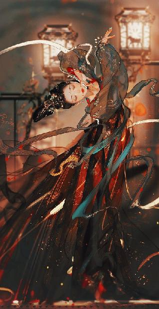

第92集·生死荣辱
唐国篇（16）
出版日期：2021-02-11
【本集内容简介】
甘露之变只是一场闹剧，但仇士良诸子俱丧，令其血性大发，尽出神策军誓要屠尽乱党。唐都长安，沦陷在一片血腥、围捕与劫掠中，渐渐走向失控……
唐皇李昂，失德无能，好色怕死，犹且觊觎姑姑太真公主的美色，由此衔恨程侯。如今李昂身陷樊笼，程宗扬少不得要与他做上一笔生意，让他知道算计别人的下场！
生意总值——一文钱！
※ ※ ※ ※ ※

封面人物：杨艳
正月十七，辰末。
大明宫，紫宸殿。
随着一声凄厉的号角声，殿后紧闭多时的阁门轰然开启。以仇士良义子郄志荣为首的数名内侍身披戎装，手持诏书，作为阵前监军，左神策军副使刘泰伦、右神策军副使魏仲卿各率五百军士披坚持锐，列阵而出。
御史台与京兆府的吏从在含元殿合兵一处，四百余人一边鼓噪着“奉皇上密诏，尽诛奸宦！”一边对宫中内侍大开杀戒，不分老幼良贱，尽行屠戮。
直到撞上杀出的神策军，他们才惊愕地发现，对方不仅兵甲齐全，而且那些内侍手捧圣旨，口称圣谕，宣称乱党谋逆，圣上诏命神策军诛杀乱党。
一众吏从惊惶四顾，却不见主事的宰相李训，御史中丞李孝本也不知何时踪影皆无，只剩下京兆府少尹罗立言，此时望着杀气腾腾的神策军面无人色，最后竟然丢下兵刃，当先而逃。
领头的都跑了，那帮拼凑来的台府吏从再无半点斗志，当场一哄而散，争相逃奔。
刘泰伦等人毫不留情，一边命人封闭宫门，一边纵兵清剿乱党。
方才吏从一边倒地屠杀内侍，此时局势又反了过来，内侍领着神策军，一边倒地反杀官吏。
正如吏从们诛杀宦官时不分良莠一样，已经杀红眼的内侍们同样不理会被杀的到底是乱党，还是在外朝正常办公的官员。无论中书、门下两省的官吏，还是金吾卫的士卒，只要还留在宫中的，全部以叛逆论处，格杀勿论。
丹凤门、建福门、望仙门、延政门……一座座雄伟而森严的宫门逐一关闭，整座大明宫都笼罩在一片肃杀恐怖的气氛中。
被屠杀的一众内侍血尚未冷，奉密旨诛宦的吏从又葬身于乱刀之下，然而更多的则是并不知情，却遭遇无妄之灾的外朝官吏。来不及逃出大明宫的，都成了刀下亡魂。
鲜血染红了丹墀，身着朱袍的官员倒在政事堂内；前程远大的新科进士被斫下首级，头颅沿着龙尾道一路滚到阙下；金吾卫抛盔弃甲，俯首求降，却被神策军刀矛并举，屠杀一空……
宫中略定，仇士良立即派出神策军，满城大索，抓捕参与叛乱的官员。
即使朝廷重臣也难逃此厄。宰相王涯在政事堂用膳时听闻乱起，仓皇逃出宫城。他年过七旬，又身长腿短，步履艰难，沿着建福门外的长街行至永昌坊，已然精疲力尽，只好在坊中暂避。
他仍穿着上朝时的紫袍，一路走来，人所共见。不多时，几名内侍便领着一队神策军循迹追进永昌坊中，在一间茶馆中将当朝宰相拖出来，当场带上脚镣木枷，犹如囚犯般押送到左神策军中。
从大明宫逃出的官吏侍者无所适从，有些逃往位于皇城的南衙诸司，寻找各自的主官同僚；有些当场便做了鸟兽散，乱纷纷逃回家中；还有些涉事的自知难以幸免，索性弃家逃出城外。
那些逃往官衙的吏员注定难逃一死。就在大明宫闭宫不久，皇城与宫城也随之关闭。
左神策军护军中尉仇士良调集兵马，搜查南衙各司，大肆清剿乱党。来不及逃走的各司官吏、护卫的士卒、百姓、商贾数千人尽数被杀。各司的符印被夺，官衙被毁，地图、文牍、卷宗或是被焚，或被抄掠一空。
偌大的长安城一片混乱，到处狼奔豕突，血流成河。左右神策军大举出动，满城捉拿乱党，官员们丢掉官袍鱼符，逃入街巷。不时有亡命出逃的乱党与追捕的军士当街搏杀，血染街头。
在这场席卷长安的暴风骤雨中，无数人如同惊弓之鸟，惶恐不已。而此时大局已定的仇士良却披头散发，血红的双眼突突直跳，状如疯魔。
刚刚拿回左神策军的兵权，噩耗便接连传来，先是投诚的随驾五都指认，其长子仇从广被田令孜指使手下刺杀于兴庆宫外的复道内；接着鱼弘志举告，窥基与内侍刘贞亮等人勾结，趁其三子仇从源昨晚拜见博陆郡王，在途中行刺，夺走鱼符。鱼弘志自承，他觉察到刘贞亮等人夺走鱼符，却起了贪念，想来一出螳螂捕蝉、黄雀在后，却不料被太真公主横插一杠，左神策军的兵权最后还是落到仇士良手中。
仇士良自然不信，一边让人捉拿那些与窥基和皇帝勾结的内侍叛贼，一边派人寻找自家诸子。
不多时，仇从广、仇从源的尸首陆续被找到。半个时辰后，几名内侍在东内苑一处沟渠中，找到四子仇从渭的尸首。唯独五子仇从潩不见下落，不过宫中大乱，至今音讯皆无，分明已经凶多吉少。
仇士良痛彻心肺，横刀坐在廊下，一边放声哭号，一边咒骂作乱的韩约、李训、罗立言，乃至窥基等贼党……
等一名小太监奔进来，禀报自己位于兴化坊的宅院黎明前突遇大火，阖门尽没，连唯一传宗接代的次子仇亢宗也葬身火场，仇士良几至气绝。
良久，他淌下两道血泪，然后持刀入殿，双膝跪地，向李昂施了一礼，嘶声道：“好教陛下知道，老奴五子皆已伏诛！圣上厚加赏赐，老奴不敢辞，奴才给圣上谢恩！”
李昂面如土色，身体抖得像筛糠一样。
仇士良一手扶刀，硬梆梆在地上磕了五记响头，声如铜鼓，将桐油浸过的金砖生生磕碎，额上皮破肉绽，血肉模糊。
他抬起头，带着满脸的鲜血紧盯着李昂的眼睛，狞然说道：“传圣上口谕：凡所乱党！无论尊卑贵贱，官职高低！尽数逮入神策军！着命有司严刑审讯！追其党羽！敢隐瞒者，杀无赦！”
郄志荣等人咬着牙尖声道：“奴才遵旨！”
鱼弘志低声对仇士良说了几句，仇士良点了点头。
鱼弘志扬声道：“来人啊！护送皇上前往蓬莱秘阁，严加护卫，以免被乱党惊扰。”
几名内侍应了一声，抬起软舆，其中一半是仇士良的义子义孙，另一半则是鱼弘志的心腹亲信。
李昂心丧若死，他疯狂地咬着手指，脑中满是仇士良血泪交流，犹如噬人的凶恶眼神。
※ ※ ※ ※ ※
冬日的阳光洒在院中的砖石上，光线淡若无痕，温度似有还无，恍惚得如同一场梦幻。
从窥基堕身血海，到魔影消失，乌云尽散，不过短短几个呼吸的时间，却仿佛经历了沧海桑田，时移势易。
从这一刻起，曾经代替先皇出家的佛门高僧，十方丛林的唐国领袖，名动天下的三车法师，备受唐国皇室礼遇的窥基大师，在千余名僧人的注视之下，弃佛背誓，成为一名背叛佛门的弃佛者，彻底身败名裂的同时，也宣告了一个时代的结束。
一名红袍赤膊的青龙寺僧人高呼道：“特大师蒙佛祖点化，揭穿窥基名为佛子，实为妖魔的真面目！救我佛门于水火之中！功德无量！”
不少僧人齐声道：“阿弥陀佛！特大师功德无量！”
如是者再三，呼声越来越狂热。
周围尚在懵懂的僧人终于惊醒过来。有些反应机敏的，赶紧双手合什，举过头顶，和那些红袍赤膊的蕃密弟子一样，向释特昧普顶礼膜拜，称颂不已。
还有些如净念等人，虽然没有以蕃密见礼，也跟着动了动嘴唇。无论如何，能够揭穿窥基这个佛门领袖的伪信徒真面目，特大师都是当之无愧的首功。
释特昧普傲然抬起下巴，举起双手，微微向下压了压。
欢呼声应手而停，没有半点违逆。
“佛祖在上！我，释特昧普，金身法王，左街僧录，佛门拯救者！愿一切荣耀归于佛祖！”
释特昧普宝相庄严地说道：“本法王于日前入定时，受佛祖指引，察觉有邪魔身披袈裟，混迹于佛门之中，冒充佛子。本法王惊骇无比，与大孚灵鹫寺沮渠二世大师的特使，净念大师商议多时，最后本法王立下宏愿，宁愿舍弃生命，也要卫护佛祖的荣耀与尊严……”
释特昧普长篇大论地向群僧弘法，大肆宣扬自己拯救佛门的无上功德。
在场的都是十方丛林一系僧众，随着特法王洪亮的声音在庭中回荡，原本震惊不安的僧人们渐渐听了进去，心底的些许疑惑在他不断重复的口号声中烟消云散，越来越相信是这位蕃密法王一手拯救了十方丛林，将陷入邪魔可怕阴谋的唐国佛门在深渊的边缘拯救出来，否则所有人都可能被邪魔迷惑，堕入地狱。
众僧目光越来越虔诚，信念越来越坚定。只有净念，虽然与众僧一道口宣佛号，却神情郁郁，眉头不展。
窥基成为弃佛者，程宗扬原本“佛门公敌”的名号也随之洗清，众僧此时方知，他们是被窥基假传的谕旨给骗了。释特昧普和净念亲口证实，沮渠二世大师非但从未称程侯为妖魔，反而称其与佛门有缘，福泽深厚，专门谕示十方丛林诸寺对程侯以礼相待，并且邀请他闲暇时前往大孚灵鹫寺一行。
得知真相之后，众僧对这位传说中灵尊转世的程侯仇恨全消，纷纷向其施礼致意，态度恭敬。
窥基与他的亲信弟子或死或逃，大慈恩寺群龙无首，释特昧普急于去接收他的势力，以免夜长梦多。
一番弘法，稳住众僧之后，释特昧普合掌说道：“程檀越，窥基背弃佛祖，实为我佛门之耻，十方丛林的千古罪人！幸得佛祖庇佑，程侯安渡此劫，来日必有福报。”
程宗扬一边稳住丹田的波动，一边从容道：“承大师吉言。”
“大慈恩寺被邪魔盘踞多年，待本法王扫净妖氛，还请程侯光临敝寺。”释特昧普说着，暗暗给他打了个眼色。
程宗扬心下会意，“窥基那邪魔广收门徒，余孽极多，有些弟子还在寺外肆虐，劳烦特大师受累，尽除其妖孽，还十方丛林清白。光荣归于佛祖！”
“光荣归于佛祖！”
释特昧普郑重其事地在胸前写了个“卐”字符，然后挥臂道：“凡我佛门弟子，且随本法王回大慈恩寺！”
众僧齐声应诺，“谨遵法旨。”
释特昧普合掌道：“告辞。”
程宗扬拱手作别，让祁远代为送行，又道：“净念大师，还请留步。”
净念合掌施了一礼，默不作声地停下脚步，与受伤的净空一同留了下来。
※ ※ ※ ※ ※
“密宗法门贫僧所知不多，只略微听过一些。”
程宗扬最在意的是窥基的下落，开口相询，净念思索片刻，说道：“以贫僧之见，窥基方才所用的多半是血遁之术，以血为引，借机远遁。”
“也就是说，窥基没有死？”
净念摇了摇头，“一个精擅各种密宗法门的佛门高……邪魔，不是那么好杀的。”
虽然早知道窥基没有死，但此时由净念亲口证实，程宗扬仍有些心里发沉。毕竟被这么个堕入魔道，又一心要取自己性命的魔僧盯上，免不了要提心吊胆。
但话说回来，此前窥基一声号令能调动上万僧众，也没能要了自己的小命，如今成了众叛亲离的孤魂野鬼，想取自己的性命，更没那么容易。
程宗扬把窥基的下落抛到脑后，开口道：“你心情不太好？”
“嗯？”
“行了。你这光头一根儿毛都没有，什么心事都藏不住。”
净念低低叹了口气，垂下头去。
“释特昧普跟窥基争辩时，我就看你脸色不好。”程宗扬自己的脸色也好不到哪儿去，靠在椅中道：“他们两个吵来吵去，可不管怎么吵，都没有替你们大孚灵鹫寺的摩法宗辩护一个字。”
净念勉强道：“佛门诸宗，殊途同归，原不分彼此。”
“这种官腔你就省省吧。释特昧普故意在众僧面前跟窥基吵嚷不休，争执谁才是佛门真传，操的什么心你还看不出来？”
程宗扬毫不客气地揭破道：“窥基弃佛叛逃，大慈恩寺如今已是无主之物，够资格执掌大慈恩寺的，除了他这个蕃密法王，就是你这位上院来的红衣大德。不借窥基的口把你们大孚灵鹫寺的传承抹黑，他怎么跟你这个沮渠大师的亲传弟子争？”
净念怔了片刻，然后苦笑道：“程侯果然天生慧根。贫僧这会儿方才明白，特大师为何要与窥基当众争辩。”
程宗扬奇道：“那你在发什么呆呢？”
净念低头想了片刻，然后吐出五个字：“我要去天竺。”
“去天竺？”程宗扬明白过来，“你想去看看天竺佛门，是不是真跟特昧普说的那样？”
“不错。”净念道：“我要去灵山，去鹿野苑，去菩提道场看看世尊成佛的菩提树是否还在，去看看昔日的万里佛国，是不是真的化为云烟……”
程宗扬摸了摸鼻子，“鲁智深那边……你不管了？”
“此事关乎不拾一世大师的声名信誉，更关乎我大孚灵鹫寺的传承真伪，孰重孰轻，不难抉择。”
这倒也是。鲁智深带走不拾一世大师留下的衣钵，对大孚灵鹫寺来说当然很重要，但现在窥基与释特昧普的争论，直接将矛头指向不拾一世大师的传承——如果不拾一世大师所传的摩法宗被论证是假的，鲁智深带走的衣钵还有个卵用。
“沮渠大师会答应吗？”
净念毅然道：“我意已决！即便粉身碎骨，也要西行求法！不见如来，誓不返乡！”
程宗扬表情怪异地看着他。
干！净念这光头，不会还有个名号叫唐僧吧？不过这位唐僧一身的腱子肉，修为精强，去西天取经倒是用不上猴哥。相反，有这位唐僧一路降妖除魔，倒是个顶尖的保镖……
“你稍等啊。”程宗扬向贾文和使了个眼色。
两人走到外面，程宗扬低声道：“这光头靠谱吗？”
“主公所言何事？”
“我怎么觉得这光头不大聪明的样子？不会是个猪队友吧？”
“其志不在此罢了，人非愚顽之辈。”
程宗扬点了点头，然后叫道：“老四！快过来！我给你找个保……同伴！”
祁远正在跟蒲海云等人说话，闻声过来。
“这位净念大师也要去天竺，你们正好结伴。”程宗扬肃然道：“你路上可要好好保护这位大师，助他西天取经！”
“那敢情好！”祁远笑着对净念说道：“路上有个伴儿也好照应，大师行李多不多？”
“贫僧一钵一杖足矣。”
“这好办！”祁远拍着胸膛道：“既然是程头儿吩咐的，大师一路的吃喝用度全包在我身上！”
净念合什道：“多谢施主。”
“我姓祁，大师叫我老四就成！大师贵庚啊？学法几年了？我这人嘴碎，大师可别介意……”
程宗扬留下祁远跟净念套瓷，自己出来去见蒲海云。
这回与窥基交锋，他们可是出了大力。那些巡行僧悍然自爆，全靠着他手下的死士以毒攻毒，扑上去同归于尽。否则被那些佛门的狂信徒冲进人群，己方伤亡必然大增。
不过这帮胡商太过卖命，反而让程宗扬更加提高警惕。毕竟王彦章提到，当日从娑梵寺返回时的那场刺杀中，这个蒲海云也在场，只是没有出手罢了。
蒲海云仔细看着他的脸色，担忧地说道：“侯爷似乎受了伤？”
“一点小伤，不碍事。”程宗扬道：“这回还要多谢蒲先生，若非贵属舍生忘死，今日伤亡必不止此。”
“能为侯爷效力，是蒲某的光荣！只要侯爷用得着在下，刀山火海，万死不辞！”
程宗扬试探道：“蒲先生有这么多勇士，真让我大开眼界。不知是蒲先生的族人，还是从哪里招募来的？”
“不瞒侯爷说，今日来的有些是蒲某的族人，更多的则是蒲某从阿拉木特招募来的死士。这些死士对主人忠诚无比，不畏生死，是最勇敢的战士，也是最可靠的护卫。蒲某远航时，即使再猛烈的暴风雨，他们也毫不畏惧，敢冒着比大山还高的风浪，爬上最高的桅杆。”
程宗扬频频点头，称许不已，然后道：“这些勇士因我而死，我让祁远准备些财物，对他们的家人厚加抚恤。”
“这等小事，蒲某去做便是，岂敢让侯爷费心？”
逊让几句，蒲海云勉强接受了程侯的好意，领着手下告辞。
高智商小声道：“师父，我看着你好像对他不大放心？”
“有这么明显吗？”
“没有！没有！也就是徒儿跟你久了，才瞧出来。”高智商道：“他们这回死了不少人，说起泉州的事也靠谱，我已经打听了，这个蒲海云确实在市舶司有官职的。”
“你想说什么？”
“徒儿是想说，他刚才说的死士要是能用，要不咱们也招募一些？”
程宗扬拍了拍他的肩膀，“他说的那些死士确实忠诚无比，但你招募来的，可未必对你忠心。”
高智商有些不解，“我招募来的，我给他们发钱粮，他们不对我忠心，还能忠心谁啊？”
“你不懂那些人，我也不懂。但我知道，这些人不可信任。”
高智商琢磨了一会儿，没想明白。
程宗扬道：“铁中宝呢？”
高智商一拍额头，“老铁真是够意思！把手下能打的兄弟全拉来了。我按贾叔的吩咐，悄悄带他们从月洞门进来，埋伏在楼上。这回也玩命，死伤好几个，这会儿在厢房休整。”
“走，过去看看。”
铁中宝背上中了一刀，此时光着膀子坐在门廊边，敖润正给他上药。
“娘的！那帮该死的妖僧！”铁中宝骂骂咧咧道：“可惜了我那三个兄弟，死得太冤了……”
铁中宝说着眼圈泛红，连忙使劲吸了吸鼻子，把眼泪憋了回去。
“老铁！”
铁中宝抬头道：“程头儿！你怎么来了？”
“我来看看你们兄弟。伤势怎么样？”
铁中宝使劲擤了把鼻子，满不在乎地晃了晃肩膀，“三刀不如一枪，这点儿都是皮外伤！”
敖润朝他脖颈中打了一记，“别动，伤口又裂了！”
程宗扬伸头看一眼，还好，伤口不是太深。
程宗扬也学着他的样子，在门廊边坐下，问了问铁马堂众兄弟的伤亡，然后道：“多谢的话我就不说了。这回堂里遇难的兄弟，每人两百金铢，外加等额的绢帛物品，受伤的兄弟每人一百金铢。”
铁中宝脑门涨红，“程……程头儿，这个……这太多了。在我们凉州，一条人命也就十万钱……”
“这些兄弟都是家里的顶梁柱，这点儿钱怎么够？”程宗扬道：“我听高智商说，你们那边人多地少，老乡们都要走南闯北去讨生活？”
铁中宝老实道：“土地倒是不少，就是太贫瘠了。水少，地也不肥，出产不多。同样的地，收成还不到这边一半。”
“这样，无论是我这里，还是江州、临安那边，只要你推荐来的人手，我一律全收。能不能发大财，我不敢保证，但养家糊口肯定是够的。”
铁中宝腾地站了起来，“程头儿！这我可太谢谢你了！不瞒你说，我刚接手堂里的事，满脑门子都是官司，光打打杀杀还行，为了能给堂里的兄弟讨个生计，可把我给愁坏了……”
“咱们兄弟就别谢来谢去的。只要我生意还在，少不了要你们帮扶。”程宗扬道：“这回你们全都出来了，丹霞宗那些个帮派，有没有动静？”
“丹霞宗没怎么动，不过新来那几个帮派，人都不见了。好像是在谋划什么事儿。”
“哦？”
※ ※ ※ ※ ※
“这帮该死的废物！”柴永剑恨恨道。
他混在刚被招募的太原兵中准备入宫，却不料事到临头，顶头的太原节度使王璠不见踪影，反而出来个找不到自己兵的邠宁节度使郭行余。
主官跟下面的小兵谁也不认识谁，就那么乱哄哄地入了宫，结果刚进门就迎头撞上京兆府的吏从正跟兔子一样往外逃，说是神策军杀过来了。
那位姓郭的节度使真是好样的，一个文官，挺刀高呼勤王救驾，迎着溃兵逆流而上。
后面柴永剑没看到，因为周围的太原兵全跑光了。有些是怕摊上事，看风头不对抢先逃命；还有些胆子大的，起了贪心，想在宫里浑水摸鱼。
柴永剑心有不甘，可大明宫大得让人眼晕，宫阙一望无际。无奈之下，只好带着同样混进军中的十几名手下退了出来，找了条背巷扔掉太原兵的盔甲，换成布衣。
他运气不错，刚逃出宫，宫门便即关闭。那些起了贪心的，全被堵在宫里，惨叫声隔着半人厚的宫门都听得见。
一名手下不大客气地说道：“柴宗主，宫里是进不去，咱们往哪儿？”
柴永剑脸色有些难看，这帮人自己也不熟，只知道是上面安排来的，平时对自己也不怎么服气。按照李宏李执事的吩咐，他们这股人马入宫的目标就是权阉仇士良，最好能在乱军中将其杀死。现在宫门都关了，还能去哪儿杀？
柴永剑一跺脚，“回兴化坊！”
据他所知，苏执事另外还安排了一批人马，趁夜闯入仇士良位于兴化坊的私宅，杀人放火。
而凉州盟的驻地就在兴化坊，两边若是换换，自己根本不用绕那么大个的圈子跑到宫里，最后还落得一事无成。
这分明是有人在里头使绊，故意给自己好看……
柴永剑暗自思忖，自己这些凉州一带的人手原本受严森垒严执事调遣，严执事死后，才移交给李宏接手。现在看来，李宏的手腕、魄力都远不及那位苏沙苏执事，不知道能不能找个路子，改投门庭？
不过苏执事是胡商，信重的手下都是胡人，自己便是投靠，也未必能入他的法眼啊。
犹豫间，黎锦香忽然道：“小心！”
这贱人倒也是条路子，但她是行里养的牝马，身份低贱，眼下虽然行里还用得着她，留了分体面，可迟早也是被人拿来消遣的货，未必能有什么前程。万一投错了门路，将来沦为奴下奴，那可再难出头了。
看来还是得指望自己的夫人，怎生想个法子，让苏执事高兴高兴……
柴永剑定了定神，往巷外看去。此时众人越过朱雀大街，刚进兴化坊，只见一队神策军簇拥着几名骑着高头大马的内侍，声势雄壮地前往十字街。
黎锦香道：“是去王璠府上的。”
“妈的！”柴永剑恨恨骂了一声。
自己正带着人打算去找王璠，观望风色，没想到又晚了一步。
※ ※ ※ ※ ※
王璠府上大门紧闭，一帮江湖人立在墙头，执弓佩刀，戒备森严。
“杀！使劲杀！”柴永剑咬牙切齿地说道：“杀他个血流成河才好！”
那队神策军赶到门前，并没有如柴大宗主的愿，挥兵攻打，而是从中驰出一名白衣内侍，尖声叫道：“王节度使！王涯、舒元舆等人谋反，已被捉拿入狱！如今朝廷宰执之位空缺，奴才奉皇上口谕，请王节度使立刻前往含元殿，宣麻拜相！”
几名江湖汉子从墙头跳下，入内禀告主人。
王璠满心犹疑，诛宦之事自己也是参与者，但在含元殿上，自己终于还是没能横下心来，最后算是悬崖勒马。
可诛宦的事跟王涯有什么关系？
“好事啊！回头可得称相爷了！”
那些江湖人才不管他的犹豫，使劲儿催促他去接诏。毕竟刀枪无眼，常在河边走，哪能不湿鞋？江湖人也不是疯子，谁肯平白去跟神策军玩命？
王璠心里嘀咕，难道是真的？自己真有机会当上宰相？
可万一是假的呢？
自己明明已经悬崖勒马了啊，顶多是知情不举……
王璠患得患失，心头乱纷纷理不清头绪。
外面的内侍重复了一遍口谕，又称皇上的近侍鱼弘志专门吩咐过，当初王璠向王守澄王枢密使举告宰相宋申锡等人谋反，替宦官们解决掉了一桩大麻烦，是大伙儿信得过的自己人。这次能出任宰相，也是因为鱼公公等人在皇上面前说了他不少好话。
那帮江湖人也频频催促道：“赶紧吧，可别让皇上久等了！”
“这么多人看着呢，怎么可能是假的？”
“可不是嘛，假传圣谕，他不要脑袋了？”
内外劝说下，王璠终于心动，命人开启中门，自己整理好衣冠，然后扶着腰带稳稳迈步，以继任宰相的气度前去受命。
刚到门外，那队神策军便一拥而上，将他围在中间。白衣内侍笑道：“恭喜王相爷！这回一步登天了，哈哈哈哈！”
那内侍虽然在笑，眼中却无半点喜意，倒像是在咬牙切齿一般。
王璠如堕冰窖，连忙回头去看，那帮自己花费重金招募的江湖人早已躲得远远的，投来的目光就像是不认识他一样。
“恭喜王相爷！”
“恭喜相爷！”
那些神策军士卒满是嘲讽地恭贺道：“相爷这回是升官、发财、死老婆，好事都赶一块了啊。”
一名士卒拍了拍他的脸，“相爷是不是高兴傻了啊？”
王璠怔在当场，然后痛哭失声。
“相爷，来吧。”
那内侍带着一丝狞笑抖开锁链，一端套在王璠颈中，另一端挂在马鞍上，然后扬鞭打马，牵着这位泪流不止的节度使，往西内苑而去。
※ ※ ※ ※ ※
“废物！废物！都是废物！”柴永剑骂声不绝。
忽然间黎锦香美目一闪，柴永剑顺着她的目光看去，顿时一个激灵。
“仇亢宗！”
街角处，一个年轻人正探头探脑往这边看。他穿着一袭半旧的布衣，但衣内鼓囊囊的，衣角卷起，露出里面上好的裘服。
眼看着神策军离开，那人缩回脑袋，小跑着钻进一间客栈。
“徐仙长！”仇亢宗奔进客栈，返身掩上门，急忙说道：“仙长果然神机妙算，刚才那些人都是鱼弘志那厮派来的。”
徐君房临窗而坐，神情淡然，一派仙风道骨。
仇亢宗有些后怕地说道：“鱼弘志跟我爹一向不对路，我刚才若是露面，是福是祸还两说呢。”
徐君房道：“公子是有福之人。”
“多亏了仙长指点，在下才逃过此劫。”仇亢宗满心感激地说着，然后道：“敢问仙长，不知家父吉凶如何？”
徐君房摇了摇手，“天机不可泄露。不过嘛，上元之夜，仇公公曾抽中过一支上上的仙签，此番当是有惊无险，别有鸿运也未可知。”
“多谢仙长！”仇亢宗放下心事，然后回过头，“还有高公公……”
高力士笑眯眯嘟起大红嘴唇，细声细气地说道：“咱家虽是伺候公主的，到底还是宦官。跟仇公公嘛，那都是亲亲的自家人儿。”
“多谢公公厚爱！仙长和公公的大恩大德，在下铭记五内，必有后报！”
“一家人不说两家话。老仇的儿子，那就是我的亲侄儿！”
“只可惜了我那几房妾室……”仇亢宗说着堕下泪来。
昨晚徐仙长入静时，突然感知天机，不顾泄漏天机可能带来的天谴，连夜带着高力士赶来示警，将自己劝到客栈暂住。
仇亢宗原本半信半疑，结果刚到客栈不久，自家的宅院突然失火，阖门老小竟无一人得脱。自己的姬妾童仆，连同家中多年积蓄的财物尽数化为乌有。
仇亢宗来不及伤心，便又听说宫中大乱，一群乱党在宫中大肆行凶，宣称要诛尽朝中宦官。
仇亢宗那是什么家世？哥哥、弟弟，连老爹全都是太监，就他自己一根传宗接代的独苗。要是宦官被杀光，他这千顷地里一根苗也活不了。
惊惧间又听说内侍已经召集神策军，出兵镇压乱党，双方在大明宫杀得人头滚滚。
仇亢宗心情忽惊忽忧，百般煎熬，时而痛心葬身火场的家人，时而担忧父亲兄弟在宫中的安危，时而又盼着父亲诛尽乱党，将自己救出生天。短短一个多时辰，如同过了十年，忧惧交加，悲欢不定，早已经方寸大乱。此时看着这位及时示警的徐仙长，真如救苦救难的神仙一样。
方才内侍领着神策军入坊，他想过去打探消息，徐仙长警告他，此事福祸难料，不宜轻动。
仇亢宗牢牢记在心里，只小心在旁探视，结果正如徐仙长所料，来的是鱼弘志的人。刚才自己若是露面，说不定他们起了歹心，随手把自己一杀，推到乱党身上。反正今日已经死这么多人，一条人命不过鸿毛般无足轻重。
仇亢宗打定主意，在见到父亲之前，自己就跟定了徐仙长，海枯石烂，寸步不离。全靠仙长庇护，才能逢凶化吉，遇难呈祥……
仇亢宗正在心里默念“神仙保佑”，忽然房门“呯”的一声巨响，被人大力撞碎，一个蒙面人飞身而入，刀光犹如匹练，劈向仇亢宗额头。
仇亢宗也是习过武的，可此时被这雷霆般的一剑震慑，竟然来不及反应。
身边红影一闪，高力士双掌合拢，如同拍蝴蝶一样，将刀身挟在掌中，尖声道：“奴才挡住他！快走！”
徐仙长一把推开窗户，猎犬般敏捷地跳了出去。
仇亢宗怔了一下，急忙跟上。
窗后已经有蒙面人围拢过来，徐仙长头也不回地撒腿狂奔，到了巷口一个急转，瞬间消失。
仇亢宗紧跟着转过巷口，没看到徐仙长的身影，当时就慌了。他跑了几步，见不着徐仙长的影子，又想回头，后面那几名蒙面人已经紧逼过来，眼中凶光毕露，分明是冲着自己的小命来的。
仇亢宗在巷子里一通乱钻，一边跑一边苦苦寻找徐仙长的身影，结果人没找到，身后的杀手却越来越近。
仇亢宗住在本坊，好歹路熟，兜了一圈，又回到起初的巷口，可那位徐仙长就像人间蒸发了一样，不见踪影。
那几名蒙面人已经近在咫尺，仇亢宗慌不择路之下，跳上巷边一只鸡笼，试图攀到墙上。谁知连日回暖，墙头积雪消融，土墙顶部被雪水泡软，非但没有借上力，反而抓了一手的湿泥，仰面摔倒地上。
一名蒙面人已经追至，挥刀砍下，仇亢宗怪叫着抡下衣袍，卷住刀锋，然后连滚带爬地避开，试图钻进旁边的巷子。
谁知迎面又有几人过来，当先一人挽着英雄髻，扎着英雄巾，虽然长着一张马脸，但下巴几乎抬到鼻尖上，气势极为不凡。旁边一名老者，生得獐头鼠目，神态肃然。
仇亢宗扑进巷口，还未爬起身，后面的蒙面人甩开卷在刀上的衣物，快步追来，然后对着他的脖颈一刀斩下。
听着颈后的风声，仇亢宗惊骇欲绝，恐惧地瞪大双眼，电光石火间，身后忽然传来一声高呼：“周少主，救命啊！”
竟然是自己苦寻不得的徐仙长！
仇亢宗如聆仙音，不知哪里来的力气，两手按在地上，猛然用力一撑，避开及颈的刀锋，接着臀后一痛。
周飞眉头紧锁，正仰着脸思考人生，闻声放低下巴，不由一怔，没想到会在此地撞见太泉古阵的旧识。
紧接着那年轻人一声惨呼，却是被后面的蒙面人追上，一刀斩中屁股。
徐君房从鸡笼里钻了出来，大袖飘飘，全无半点颓然之色，扬声道：“仙缘难得！周少主！切莫错失天机！”
昔名博眉头一动，觉得此事并不简单，提醒道：“少主？”
周飞心下会意，挑起剑眉，厉声喝道：“住手！”
那蒙面人不理不顾，又是一刀斩下，刀锋直取仇亢宗背心。
“叮”的一声，刀锋斩在一根伸来的枪杆上。
周飞一手握着那杆大天龙大霸王之枪，横眉瞋目，凛然道：“朗朗乾坤，光天化日！当着我周飞的面行凶杀人，好大的胆子！”
“该死的！”那蒙面人捏着嗓子道：“他是仇士良的儿子！快杀了他！”
“人命关天！”周飞斩钉截铁地说道：“不管他是谁，我周飞决不允许有人当着我周飞的面滥杀无辜！”
那蒙面人心焦如焚，索性扯下蒙面的布巾，叫道：“你个蠢货！快动手！”
周飞一怔，那人面孔半生不熟，依稀是剑霄门的人……
周飞心头像被扎了一下似的，再想起那句“蠢货”，更是怒从心头起，恶从胆边生，长枪一翻，往他手腕挑去。
那人正挺刀再次斩下，长枪变招，他收势不住，合身向前扑去，脚下一个踉跄，正好将胸口送到枪锋上。
“噗”的一声，长枪入体，鲜血顺着枪锋上的血槽飙出。
周飞一脸懵懂，自己并没有准备痛下杀手，怎么这人就自己扑上来了？他怎么就不躲呢？
“你……你……”那人捂住胸口，刚张开嘴巴，一股鲜血便即涌了出来，喉中咯咯作响，最后颓然倒地。
周飞脑中“嗡”的一声，脑门渗出一层细汗，旁边的昔名博也不由地张大嘴巴，露出几枚残缺的牙齿。
另外几名蒙面人似乎被他气势所慑，慢慢向后退开，然后转身逃奔。
茫然间，巷口传来一声喝彩，徐君房伸出双手的大拇指，满脸佩服地说道：“周少主！真真是英雄了得！”
仇亢宗哭叫着爬上去，抱住徐君房的腿道：“救命啊……”
随后赶来的黎锦香微微松了口气，松开剑柄，然后深深看了周飞一眼，转身离开。
※ ※ ※ ※ ※
“方才那是什么妖怪？其状颇为骇人啊。”
谢无奕一边用丝帕掩住口鼻，一边矜持地说道。
谢家这位大爷虽然身怯体弱，但风度还是有的。他与石超一道，在护卫重重保护之下过来见面，虽然对刚才那尊魔神心有余悸，好歹没有失态。
程宗扬道：“窥基的妖魔化身。”
“耶？大慈恩寺那位高僧入魔了吗？”
“他已经弃佛了。”
“可惜可惜。”谢无奕遗憾地说道：“三车法师虽是佛门弟子，但毫无佛门愚顽之辈的迂腐矫饰，不为清规戒律所拘，载妓讲经，诚为风流佳话，不意就此绝迹。”
程宗扬不由苦笑，这位谢大爷也是个风流人物，倒是与窥基惺惺相惜。
谢无奕道：“你脸色看着不大好啊。”
“受了点伤，歇歇就好了。”
“能歇过来？”
“一点小伤，都习惯了。”
“那行，你歇着吧，我回了。”
程宗扬不禁笑道：“你这也太爽利了吧？一句话就走？”
“我就是过来看看你，这不是看过了吗？”谢无奕道：“何必像俗人一样没话找话，嘘寒问暖呢？那不是给你添乱的吗？”
程宗扬道：“说的对。我也不硬撑着见客了，回头再聊吧。”
谢无奕飘然而来，洒然而去。程宗扬也没有再去见独孤郎等人，一手按着小腹，缓步回到内宅。
张恽目光躲躲闪闪，似乎有些惶恐。
丹田内痛意越来越剧烈，程宗扬也没有心情说什么。
走到廊下他才皱起眉，“怎么回事？”
楼上的回廊仿佛被一柄巨大无比的利刃斩中，屋檐裂开，回廊洞穿，能看到里面的卧房被摧毁大半，墙壁上血肉模糊，一片狼藉。
张恽道：“方才那魔物劈下一道血光，正好斩中内宅……”
程宗扬一颗心直沉下去，那间正是赵飞燕、赵合德姐妹俩的卧房。血光斩下时，如果她们当时正在房内……
“是谁受了伤？”
“没有，没有！”张恽赶紧解释道：“娘娘当时在下面，屋里没人。那血都是魔物斩下时溅的。”
程宗扬松了口气，又听张恽说道：“只是……娘娘受了些惊吓……”
程宗扬心又悬了起来，“严重吗？”
“只是……”
“只是什么！”
“只是……”张恽吞吞吐吐地说道：“娘娘腹里……有些不大妥当……”
※ ※ ※ ※ ※
赵飞燕卧在榻上，脸色苍白，白如脂玉的额头上隐隐沁出冷汗。寿奴等人在旁照料，小心翼翼地避免发出声音。
程宗扬握住她的玉手，只觉一片冰凉。
“怎么样？”
赵飞燕勉强展颜一笑，“还好……就是腹里坠坠的，有些作痛……”
说着，她美目含泪，泫然道：“对不起，是妾身太没用了。”
“别担心，必定不会有事的。”程宗扬劝慰道。
自己好不容易才有了子嗣，怎能不担心？他想摸摸赵飞燕的小腹，又怕惊动了胎气，想了想叫来张恽，“立刻去上清观，请燕仙师前来看看。”
张恽领命退下。
程宗扬握住赵飞燕的手掌，正待传一缕真气过去，可丹田微微一动，顿时闷哼一声，死死咬紧牙关。
可惜这口血呛得太急，虽然程宗扬咬牙忍住，血沫却从鼻孔里喷了出来。
赵飞燕大惊失色，抱着他道：“夫君！”说着又牵动胎气，颦眉痛叫。
周围的赵合德、孙寿、成光、尹馥兰，都跑了过来，却都束手无策。
程宗扬竭力咽下鲜血，然后直接拉起合德，嘶哑着嗓子道：“来。”
合德最是乖顺，一边不避血腥地吻住他，一边宽衣解带。
这边孙寿与成光帮主人除去衣物，尹馥兰俯身张口，吸吮住主人的阳物。
近日来主人屡屡重伤，这些紧急疗伤的路数，众女都是练熟的。
众人移到榻上，赵合德脱去衣物，除去鞋袜，娇躯一丝不挂，白羊般仰面躺好，双手分开羞处，露出娇滴滴的玉涡美穴。
程宗扬合身压下，阳物没入穴中。
“啊……”
赵合德轻颤着低叫一声，一边温柔地挺起下体，用自己柔嫩的蜜穴抚慰夫君的肉棒。
身下的小美女身娇体柔，温如春水，尤其是那只玉涡美穴，软嫩柔腻，怒胀的阳物纳入其中，宛如沉浸在温柔乡里，将他体内撕裂的痛意一丝丝化去。
因为前戏未足，蜜穴中爱液尚少，阳物进入时难免滞涩。合德眉眼间露出破瓜般的羞痛，一边竭力挺动小穴迎合，好让夫君能在自己体内进得更深。
小美女雪白的玉腿向上跷起，被程宗扬压在肩下，嫩穴被阳具撑得圆张，肉棒上隆起的血管剧烈地跳动着，使得穴口红腻的蜜肉和穴上那只小巧的花蒂都为之震颤。
赵飞燕一手护着小腹，一边紧张地看着他们，等阳具完全没入蜜穴，才松了口气，望着自己的夫君和妹妹，眼中露出浓得化不开的柔情蜜意。
程宗扬双手撑在榻上，背脊满是冷汗。
将一名五级的龙宸女杀手采补一空，生死根中的阴寒死气已经化解不少。方才一战中，那些自爆的巡行僧真气极为精纯，虽然充斥着狂热偏执的负面情绪，但对于生死根被制的程宗扬来说，不啻于大补之物。
然而这一切在窥基的魔神化身出现后戛然而止。那尊魔身不但疯狂地吞噬血肉，连周边弥漫的死气也被吸走，甚至还散布出与尸傀相近的气息，使得程宗扬丹田内的生死根再次被封堵。
生死根转化效率一降再降，从三分之一掉到四分之一、五分之一，此时只剩一成。程宗扬怀疑，如果窥基不收走魔身，施法血遁，自己的生死根只怕又被彻底堵死。
好在还剩下一成的空间，给自己留出了转化的余地。有过尸傀诡异死气的经验，程宗扬没有像上一次那样手足无措，他一边在合德娇嫩的玉品鼎炉内抽送，一边缓缓催动丹田，将冰块般凝滞的死气逐渐炼化为真元。
一双白玉般的小腿贴在耳侧，随着合德轻柔的低叫，那双白嫩的纤足不时用力，脚趾并紧弯曲，宛如玉钩般吃痛地绷紧。
程宗扬握住那双玉足，放在自己颈侧。入手的软滑让他心头一阵荡漾，阳具愈发怒胀。腮旁刚冒出的胡茬扎在足背上，合德娇躯轻颤，蜜穴春水滋生，眼神愈发迷离，如水的美眸中泛起迷人的波光。
忽然蜜穴里轻轻一颤，柔腻的蜜肉一圈一圈收紧，穴口仿佛一张小嘴般含住阳物，肉棒根部传来娇腻的紧握感。与此同时，柔嫩的花心中透出丝丝清凉的气息，那种酥爽感，让程宗扬一直爽到后脑勺。
虽然满口的血腥气，程宗扬还是忍不住问道：“这是卓美人儿教你的吗？”
赵合德红着脸“嗯”了一声。
程宗扬道：“从给你开苞，你就一直在痛，现在终于尝到其中的乐趣了？”
赵合德咬住唇瓣，娇羞地点了点头。
“爽不爽？”
“爽……”
“怎么爽？”
小美女含羞道：“夫君的阳物好大，好硬……把人家里面塞得满满的……”
“每次它硬梆梆插进来的时候，人家的小穴都好像被撑得……撑得……”
“变成夫君的形状了？”
“是……”
丹田内痛意缓解，真气运转渐渐流畅。程宗扬坏笑道：“等你前边习惯了，就该给你后庭开苞，让你的小屁眼儿也变成夫君的形状。”
“啊！”小美女惊呼一声，连忙道：“我、我前面还有点痛……”
程宗扬大笑起来，握着合德的玉足一轮猛攻，龟头雨点般落在花心上，将小美女干得花枝乱颤，连声讨饶。
等合德挺着嫩穴，乖乖泄了身，程宗扬叫来成光和尹馥兰，让这两个美婢搂抱着交叠在一起，露出熟艳的美穴，在她们两只鼎炉中，轮流发泄了一回。
※ ※ ※ ※ ※
燕姣然收回手指，对赵飞燕柔声道：“无妨的，安心静养便是。”说着盈盈起身。
程宗扬笑道：“燕仙师说了无妨，你就别担忧了。毕竟是夫君我的龙种，哪儿就那么脆弱呢？对吧？”
程宗扬将赵飞燕的纤手放回被中，替她掖了掖被角，“放宽心，好好养着便是。”
程宗扬满面春风地出了门，脸色立刻垮了下来。
燕姣然立在廊角，望着被魔神摧毁的卧房，叹道：“窥基大师佛法精深，不意一念之差，竟堕魔道。阿弥陀佛。”
程宗扬讶道：“光明观堂竟然是佛门一脉？”
“非也。”燕姣然道：“敝门以医术济世，非佛非道，不拘一宗，若论其本来，更近于巫。”
“巫？”
“上古之时，医巫不分，原是一家。”
程宗扬来不及多想，便听燕姣然说道：“贵眷原本气血不足，胎失所养，兼且阴液亏虚，水不制火，有阴虚内热之症。如今突受惊吓，以致胞胎不固，隐隐有滑胎之兆。”
程宗扬心头发紧，“危险吗？”
“安危只在一线。”燕姣然望着他，“若想母子平安，还请贵眷远离房事，以免伤及胎气。”
程宗扬一阵尴尬，“我并没有……”
燕姣然道：“且须远离。”
程宗扬听懂了，意思是别说拉她助兴，就连她在旁看到，也可能因为色欲引起身体变化，影响胎气。
这事辩无可辩，程宗扬只好老实应道：“程某受教。”
“从现在起旬日之内，最是危险，若不小心，随时可能滑胎。一月之后若能平安，方可渡过此劫。”
“我记住了。”
燕姣然停顿了一下，又道：“修行之道，宜稳不宜急，当循正法而行，以免根基有损。”
程宗扬有些讪讪的，燕姣然多半是看出自己身体不妥，才出言劝谏。他有心问问这位医术超凡的仙师，自己丹田内那股寒意是怎么回事？但这样一来，自己最大的底牌，生死根的秘密不免要随之暴露。想到当初师帅慎重的告诫，程宗扬把这个念头压了下来。
他拱手道：“多谢燕仙师，程某受教了。”然后又问道：“惊理还好吗？”
“还好。断腕处伤势已然平复，再静养两日便可回返。”
程宗扬松了口气，“那就好。咳，那个……若是不麻烦，多养几日也行。”
毕竟手都断了，三四天怎么够恢复的？
燕姣然莞尔一笑，“我那里倒没什么麻烦的，只是贵属挂念家宅，未必愿意久留。”
“我让人去跟她说，让她专心休养，不用急着回来。”
程宗扬命张恽送燕仙师回上清观，顺便给惊理传话，让她安心养伤。
燕姣然走后，程宗扬安慰了赵飞燕几句，然后试图入定修炼，可心头忧烦难解，丹田中那股阴寒的气息又不时隐隐作痛，再想到惊理断手，飞燕面临流产的危险……
程宗扬怒火难耐，腾地站起身来。这一切的罪魁祸首，都是李昂！
“来人！去看看宫里怎么样了！”
程宗扬恨声道：“干你娘的李昂！老子好端端的被你害成这样……”
※ ※ ※ ※ ※
正月十七，未时。
大明宫，丹凤门。
戒备森严的大明宫此时宫门洞开，大批神策军如林而立，虎视眈眈。
不时有白衣黄衫的内侍领着军士从宫中纵骑而出，声如奔雷。紧接着，又有一队锦衣华服的男女披枷带锁，被人押着带过长街，送往左右金吾仗院。
沿途哭声响成一片，夹杂着内侍尖厉的喝骂声、训斥声，囚徒们的乞求声、讨饶声，马匹的嘶鸣声……惹得人心惊肉跳。
自午时开始，从各坊捉拿来的乱党便络绎不绝，不时有身着朱紫的高官沦为囚徒，连其家眷一并被捉，或是送入左右神策军中，或者押往左右金吾仗院，踏上血迹斑斑的禁宫御道。
宰相王涯的孙子王显也在其中。这位风流倜傥的贵公子此时风采全无，颈中和脚上拖着沉甸甸的锁链，面无人色地一步一捱，蹒跚而行。
一名身着黄衫的内侍策骑过来，不由分说地扬起马鞭猛抽一记，“死贼囚！磨磨蹭蹭作甚！”
王显被马鞍抽在脸上，顿时一声惨叫，眼角皮开肉绽，鲜血直流，眼前的景物瞬间蒙上一层血红色。
“该死的贼囚！快着些！”
那黄衫内侍挥鞭挨个抽去，催促这些乱党家眷加快步子。
忽然间，一阵马蹄声响起，两名内侍纵马驶过，兴奋地叫道：“拿到了！拿到了！”
一队耀武扬威的神策军骑兵紧跟在后，为首的牙将鞍前捆着一名罪囚。那人穿着一袭布衣，身上绳缠索绑，捆得跟粽子一样，一边的脸颊高高肿起，却是宰相舒元舆。
黄衫内侍满脸羡慕，“哥哥们好本事，抓了个宰相！”
“这厮从安化门逃走，被我们一路追上，逮了回来！”那内侍得意地说道：“姓舒的畏罪潜逃，都不用审！待咱家禀过仇公公，便去抄了他的家！”
“哥哥发财！”
那内侍尖声大笑，“发财！发财！”
紫宸殿前的空地上，跪着一片被抓获的乱党。以往威风凛凛、震慑不法的金吾卫被剥去盔甲，只剩下血迹斑斑的布衣。负责监察百官的御史台官吏被摘去幞头，披头散发，反绑着双手，浑身都是被拷打过的痕迹。
左金吾卫大将军韩约跪在最西侧，他满口牙齿被生生砸碎，此时一边吐着血水，一边浑身颤抖，连裤裆都湿了一片。
仇士良手持长刀，状如疯魔，从最东首开始，挨个砍杀过去。
人头一颗接着一颗掉落在地，一具具无首的尸身仍跪在地上，断颈处鲜血狂喷，汇成一片血泊。
韩约满嘴断齿刺在牙龈内，吸口气便痛得几乎昏厥，更让他恐惧的是那些满地乱滚的人头。
这些人——包括他自己在内——都是刚刚经历过一番严刑拷打，被迫招供的“乱党”成员。他原以为那些内侍拿到证据，会将他们先打入死牢，待有司判决之后，再押至独柳树下当众处决，明正典刑。虽然最终逃不过一个死字，到底能苟活几日，起码不用再受刑。
却没想到那位仇公公竟对他们的口供理也不理，直接在宫中大开杀戒，甚至还亲自动手。
一连斩杀十余名乱党，滚滚人头使得那些内侍动作越发熟稔。他们一人扯住死囚的发髻，拽得露出脖颈；另一人一脚踏在死囚背上，迫使其身体前倾，一边拽紧捆在腕上的绳索，向后使力，免得他们挣扎。
两边扯紧，紧接着雪亮的刀光一闪，仇士良手起刀落，那截活生生的脖颈被一刀两段，断口处溅出一蓬血雨。
“呯”的一声，滴血的人头被掼在地上，翻滚着停在韩约面前。
韩约身体抖得像筛糠一样，接着头顶的发髻一紧，被人扯住伸出脖颈。
终于轮到自己头上，韩约满心恐惧，口中“呜呜啊啊”地叫着，涕泗交流。他心底还存着最后一丝指望，这只是仇公公在吓唬自己，毕竟自己是左金吾卫大将军，是“乱党”的骨干，自己还有用——身体一轻，仿佛飞了起来，接着便看到满地的血泊朝自己的面孔飞来……
“呯！”
韩约的头颅在血水中滚了几圈，兀自睁着眼睛。
仇士良将韩约的头颅踢到一边，又接着举刀，开始斩杀第二排的乱党。
一阵寒风卷过，仿佛无数冤魂发出呜咽。
仇士良额角一缕发丝散落下来，变得又枯又白。他盯着那名引颈就戮的金吾卫，长刀高高举起。
“干爹！”
一名宦官狂奔进来，叫道：“二……二哥……”
长刀停在半空，仇士良一点一点转过头来，嗜血的目光像是要吃人一般。
那名宦官扑上来拜倒，喘着气道：“回干爹，二哥他……受伤了！”
一瞬间，仇士良瞳孔缩得仿佛针尖大小，接着“铛啷”一声，手中的长刀掉落在地。
片刻后，仇士良发出一股鬼泣般的哭号声：“苍天啊……你可开眼了……”
※ ※ ※ ※ ※
“我没听错吧？”
程宗扬一脸不敢相信地说道：“有刺客要杀仇亢宗，结果被路过的周飞给救了？”
任宏道：“秦国的徐正使亲历其事，应该错不了。”
“这是怎么说的？”程宗扬百思不得其解，“周飞背后是广源行，广源行跟窥基和李昂勾结，跟仇士良他们不是一伙的啊？”
祁远道：“见风使舵？这也转得太快了吧？”
“周飞没这么机灵，多半是瞎猫撞上死耗子了。”
程宗扬琢磨了一会儿，对贾文和苦笑道：“咱们准备得好好的，结果被周飞摘了老大一颗果子——这厮还真有点运气。”
贾文和道：“宫中如何？”
“消息乱得很，”任宏道：“不过诛宦的事肯定是败了。大明宫内死了几千人，皇城被封，南衙各司的官员、百姓，还有老杜都被关在里头。”
“杜泉在皇城？”程宗扬道：“不会有危险吧？要不要派兄弟们接应？”
“老杜去南衙打探消息，正好赶上封门。他是酒贩，只要不被人盯上，自保应该无虞。”任宏道：“听说各司都被砸了，眼下神策军正在城中大肆拿人，几名当时宰相，还有他们的家眷都被逮进神策军。十六王宅也已经封了坊门，外面有神策军守着，不许出入。”
程宗扬摸着下巴道：“看样子，宦官已经控制住局面了。”
“不好说。”任宏道：“我各处看着，许多地痞恶少都跃跃欲试，只是事发突然，一时没有动手。”
以往维护京城治安的金吾卫成了乱党，或死或擒，南衙各司也被捣毁，那些地痞恶少突然间失了约束，天知道会乱成什么样子。
贾文和忽然道：“属下请主公入宫一趟。”
程宗扬一怔，“你以前不是天天都想着拿根绳，把我拴屋里吗？这会儿怎么突然把我往外撵了？宫里还不太平呢。”
“便是此时。请主公联络诸国使节，就窥基行凶之事，向唐廷讨要说法。”
“跟仇士良拉关系？顺便给他一个借口？”程宗扬道：“不过犯上作乱这个借口已经够用了吧？”
“谋逆之事，罪在乱党，行刺汉使，则是唐皇失德。”贾文和道：“主公口气不妨严厉一些。”
“仇士良如同惊弓之鸟，太严厉会不会刺激到他？”
“仇士良不是蠢人，长安大乱未定，他有求主公之处甚多，绝不会在此时与主公翻脸。”
“明白了。正好叫上徐君房，把周飞抢走的功劳分一大半过来。”
“程上校，”任宏提醒道：“仇亢宗那事还不一定。”
“怎么不一定？”
“听徐正使说，刺客那一刀，正好伤到仇家这根独苗的命根子……”
※ ※ ※ ※ ※
“小的被那太监所阻，一时没能脱身，等赶到时，手下已经被周飞杀死。”柴永剑单膝跪地，义愤填膺地说道：“苏执事，都是周飞那贼厮作反，坏了行里的大事！”
苏沙脸色阴郁，“你是说，周飞不但没杀死仇亢宗，反而还救了他？”
“正是！”柴永剑道：“小的怀疑，都是黎锦香那贱人暗地里通风，要不然周飞那贼厮怎会来得这么巧？不是小的多嘴，他们夫妻两个，多半是起了异心！苏执事，你可千万要防着他们啊。”
苏沙点了点头，“我知道了。这件事，对谁都不许说！你去吧。”
柴永剑抱拳起身，小心退下。
苏沙在椅中沉默片刻，忽然间哈哈大笑。
屏风后出来一男一女，蒲海云满面堆欢，笑道：“恭喜苏执事，周少主这回临阵倒戈，堪称神来之笔！此番唐国事变，广源行非但无过，反而把最扎实的一桩功劳，给结结实实捞到手里，恭喜恭喜。”
苏沙满脸放光，大笑道：“这都是锦香的功劳！临机一变，不光使我广源行洗清了乱党的嫌疑，还于生死之际救下仇士良的独苗！这可是天大的功劳！当初严庞两位执事说的没错，锦香果然才智过人！是我广源行一朵名花！”
黎锦香道：“只怕柴宗主事后得知原委，会怨恨奴家。”
“姓柴的算什么东西？无非是我广源行的一条狗而已。”苏沙不屑地说道：“拿他当刀使，那是看得起他！至于有什么怨恨，借他两个胆子他也不敢。”
苏沙站起身，边走边道：“李宏这回处置失宜，将来论责定然逃脱不得。李宏一倒，姓柴的一条无主的野狗，只求着有人收留便千恩万谢。既然你管着凉州盟，便把他们夫妻拨到你手下，也好管教。”
苏沙笑道：“到时便是让他喝你的洗脚水，姓柴的也如饮甘露。”
黎锦香垂下眼睛，“苏执事说笑了。”
蒲海云笑道：“大伙儿分头押注，不成想苏执事一把骰子掷下去，竟然来了个通杀。佩服佩服。”
苏沙愈发得意，“仇公公那边的功劳算是捞到手了，还有一位……”说着他压低声音，“你和周飞，还有那位程侯，以前都是见过的，若是有机会，不妨多亲近亲近。”
黎锦香抬起眼睛，目光蓦然一凛。
苏沙干笑道：“我知道姓程的那厮生性好色，不过行里生意要紧，只好让你委屈些，跟他虚与委蛇一番……”
黎锦香道：“我嫁过人的。”
“无妨，周少主也是个识大体的。况且……”苏沙摸了摸颊上的须髯，忽然道：“他不会是喜欢男人吧？”
※ ※ ※ ※ ※
周飞是不是喜欢男人，程宗扬不知道，但他联络申服君、徐君房、谢无奕共同致函唐国，揭发窥基行刺汉使，已堕魔道，并且请左街僧录释特昧普亲自作证，立刻引起北司高度重视。
仅仅半个时辰，宫中便即传谕，将窥基与王涯、韩约、李训等人一并列为乱党，发文捉拿。
“乱党与窥基一在内，一在外，两边同时发动，若说他们中间没猫腻，咱家头一个不信！”郄志荣道：“干爹，这帮秃驴该好好敲打敲打了。”
仇士良脸色时阴时晴，自家仅存的独子幸得徐仙师庇佑，被一名路过的江湖好汉救下，可刺客那一刀砍在臀后，千不该万不该，正好伤到阴囊，被送来时，一颗睾丸几乎从伤口流了出来。
若论阴睾手术，唐国大内堪称独步天下，世间不作第二家想。但唐国大内擅长的是摘除，能保证切下来不死，至于这颗关系到仇家子嗣绵延的睾丸能不能保住，连宫里的老手都没把握。
依照他们的说法，这颗睾丸已经受创，若是摘了，至少命能保住。若是勉强缝合，一旦伤势恶化，说不定连命都没了。
仇士良举棋不定，一时想着儿子性命要紧，东西没了就没了，好歹留下一条命，将来也好给自己养老送终。
一时又想着赌一把，万一侥幸痊愈，自己说不定还有抱孙子的一天……
另一名义子道：“干爹，田令孜那厮已经招了，就是他跟窥基勾结，要把咱们全都杀光！那帮秃驴心黑着呢。”
仇士良忽然道：“徐仙长呢？”
众人一怔，郄志荣连忙道：“跟诸国使节已经来了，都在外面呢。”
“请徐仙长进来。”
“光徐仙长？那位程侯……”
仇士良想了想，“还有程侯。”
宫中大乱，敌友难辨，那位身兼汉、宋两国正使的程侯也遭到刺杀，双方是友非敌，在如今的局面下，很有交好的必要。
程宗扬一路入内，望着宫中随处可见的斑驳血迹，心中没有半点波澜。
这样的场面自己在晋宫见过，在汉宫见过，此时在唐国的宫廷再次见到，也不算什么意外。相比而言，唐国这场政变的杀戮规模还算小的——就连旁边的徐君房，也在咸阳秦宫见过更血腥更凶残的大场面。
比起其他几朝两军对垒、万矢齐发的规模，唐国这场以甘露为名发动的政变更接近于一场闹剧——几名大臣带着一帮吏从乱哄哄地动手诛宦，被宦官一个反击，便一败涂地，闹呢？简直就是丢脸！
穿过神策军与内侍的重重防护，程宗扬在绫绮殿见到甘露之变的最后赢家：左神策军护军中尉仇士良。
比起外面密密麻麻的护卫，仇士良身边的人手出奇得少，只有几名亲信的内侍陪伴，军士们都被隔离在外。
一进门，便闻到房内弥漫着浓浓的药味。仇亢宗刚用过药，此时趴在一张华丽的象牙榻上，昏昏入睡。
“仇公。”程宗扬拱手为礼。
“程侯。”仇士良双目满是血丝，鬓上多了几缕白发，脸上骄横的肥肉也垮下不少。
“徐仙长，犬子此番能保住性命，皆赖仙长庇护。”仇士良嗓音沙哑，抱拳深施一礼，“仙长的大恩大德，仇某铭记在心，此生此世，不敢稍忘。”
“仇公客气了。”徐君房往榻上瞟了一眼，不由发出一声叹息。
仇士良脸色顿变，颤声道：“敢问仙长，犬子此番凶吉如何？”
徐君房摇了摇头，“天意难测，小子岂敢妄言？”
仇士良双腿一屈，作势欲跪，“求仙长指点，千万救小儿一命……”
“不可！不可！万万不可！”徐君房连忙扶起他，停顿了一下说道：“仇公莫急，可还记得前日所得的仙签？”
仇士良惨然道：“咱家方寸已乱……”
“凶星退却吉星临，目下天官赐福星。”徐君房吟道：“久旱忽逢甘露降，尽得桃李满园春——仇公今日渡过此劫，凶星退却，吉星已临，所谓桃李满园，荣华富贵，亦不远矣。”
“吉星？”
徐君房微微一笑，向程宗扬揖手一礼，“程侯吉人天相，运势之盛，世间无匹，堪称福星。”
仇士良脱口道：“咱家怎么听说程侯是扫……”话没说完，他嘴巴一紧，把后面几个字生生咽了回去。
“一派胡言！”徐君房正色道：“程侯秉天地之运势而生，其德犹如日月经行，光被天下！万民可视！一二邪魔之辈百般诋毁，岂能掩程侯君子之德！”
仇士良连连点头，“仙长所言甚是！什么扫把星、夜猫子——都是那帮乱党胡吣，作不得数！只是小儿……”
说着他抹了一把老泪，声音哽咽起来，“既然程侯是天赐福星，还请侯爷给犬子赐福一二。”
程宗扬瞪了徐君房一眼，什么吉星、福星，把自己抬这么高，可怎么下台？
“仇公，福星这话实在是太高抬我了。”程宗扬道：“我自己家里还被人闯入，连着两天被刺杀了两次……”
“两次遇刺，都没伤到一根汗毛，那可不就是福星吗？程侯爷，”仇士良几乎声泪俱下，“咱家可就这一根独苗，呜呜……”
程宗扬彻底无奈，老仇这是病急乱投医，徐大忽悠随便一句话，就被他当成了救命稻草。老仇也是，徐大忽悠的话能信吗？
程宗扬暗暗踩了徐君房一脚。他忽悠出来的，让他自己擦屁股去。
徐君房道：“不如先看看令郎的伤势。”
仇士良抹去眼泪，亲手掀开锦被，露出仇亢宗臀股处的伤口。
仇亢宗右臀挨了一刀，伤痕从右边臀下一直延伸到左边的大腿，好巧不巧正从后切中他的阴囊。此时虽然上了药，但没敢缝合，能看到右边的睾丸从伤口露出，上面还有一道伤口。
程宗扬皱起眉头，这颗睾丸眼看是保不住，稳妥起见，最好是一切了之。但仇士良五个儿子，四个已经净身入宫，就指望这根独苗传宗接代。一刀下去固然稳妥，可仇家也彻底没了指望。
徐君房眼巴巴道：“程侯爷，你看呢？”
程宗扬深吸了口气，“以宫里的手段，能不能摘掉受伤的睾丸，保住另一颗不再恶化？”
“这个……”仇士良迟疑地望向旁边一名老内侍。
那老内侍眉头紧锁，同样面带犹豫，“兴许……能成。”
程宗扬道：“立刻把受伤的睾丸摘掉。”
仇士良似乎一瞬间老了十岁，悲声道：“我们仇家……可就剩这一个儿子了啊……呜呜……”
“无妨。”程宗扬道：“还剩一颗完好的，只要确保不感染，不会有什么影响。”
大内的手艺向来是全切，从来没有摘一颗留一颗的，程宗扬的说法完全在仇士良的认知以外，他忐忑地说道：“犬子本来就子嗣艰难，如今再去掉一颗，可怎生是好？”
“相信我，”程宗扬道：“保证令郎能给你们仇家传宗接代。”
仇士良看着昏睡不醒的儿子，最后一跺脚，“就依侯爷说的办！”
那名专职净身的老内侍上前，手脚麻利地将仇亢宗受伤的睾丸摘除，缝合好伤口。
仇士良洗了把脸，换了衣物，来到外间正式见客。
“那帮乱党聚众谋逆，意图挟持君王，尽诛朝中忠臣。甚至勾结异族，行刺侯爷，欲图挑拨我六朝邦交，用心不可谓不险恶！”
仇士良早已接到敖润以汉国治礼郎身份递来的文书，此时侃侃而言，不仅咬死了乱党谋逆，甚至将勾结异族的罪名也扣到乱党头上，显然对李训等人恨到了极点，此时胸中已有定谳，要借机大兴牢狱，清除心怀异志的朝臣。
“程侯身兼两国正使，更以辅政大臣的身份亲赴长安，可见对我唐国亲睦之谊。谁知被贼子所忌，屡次遇刺，虽然侯爷吉人自有天相，逢凶化吉，我唐国到底难辞其咎。”
说着仇士良离席拜倒，“老奴给侯爷磕头赔罪。唐国御下不严，以致贵使受惊，请侯爷见谅。”
看着这位态度恭敬的大太监，程宗扬终于明白他明明被唐皇视为眼中钉、肉中刺，为何还能坐稳一王四公的位子，成为唐国最顶尖的权阉。
仇士良素来骄横，此时刚刚挫败乱党诛宦的阴谋，将唐皇牢牢控制在手中，整个唐国完全可以一言而决，却一反常态，收起骄横之色，甚至不介意对自己卑躬屈膝，堪称能屈能伸。
而且他四子俱丧，仅剩的独子还在重伤之中，却能压下心底的愤懑和恨意，以一种近乎残忍的冷静理清眼下的局面，毫不犹豫地向自己示好，甚至示弱，显然已经权衡过利弊，无论如何先要安外，免得被汉宋诸国借机生事，横加勒索，好腾出手来清理内部。
程宗扬甚至怀疑，仇士良方才向自己求助的姿态，是不是刻意为之。毕竟与人拉近关系的最好方式，不是施惠于人，而是受人施惠。
程宗扬在心里对贾文和默默说了声抱歉。
老贾啊，不是我不听你的，实在是人家这姿态做得……无可挑剔，堂堂一个手握大权的权阉都五体投地了，自己还能怎么严厉？
程宗扬忽然道：“李辅国呢？”
仇士良打起精神，“王爷抱恙在身，尚在休养。”
“休养？我不是请他去天策府了吗？还没回来？跟卫公还聊上了啊。”
仇士良浑身打了个激灵，头又低下三分。
“既然不在就算了，改天再见吧。”程宗扬微笑道：“看来王爷对你挺放心嘛，朝廷内外的事，都交给你了？”
仇士良额头贴在地上，尖声道：“请侯爷放心，老奴以身家性命为誓，必定给侯爷一个交待！”
“仇公既然这么说了，本侯便拭目以待吧。”
程宗扬上前扶起仇士良，忽然发出一声冷笑，“冤有头，债有主，本侯也知道此事与仇公无关。只是我怎么也想不明白，本侯到底是得罪了唐国哪位权贵？仇公有以教我？”
仇士良深深低下头去，“奴才不敢妄言。”
“仇公既然不方便说，那便让本侯面见贵上，亲口问问大唐的皇帝陛下。”
“不是奴才敢驳侯爷，只是如今事态未靖，尚有乱党逃窜于外，圣上受了惊吓，不便见客。”
“是吗？”程宗扬道：“我怎么听说贵上在乱中为贼人所弑？”
“绝无此事！”仇士良正色道：“圣上只是略受惊扰，待后日朝会，自可面见群臣。”
“是这样啊。”程宗扬遗憾地说道：“那可太便宜他了。”
仇士良干笑一声，没有接口。
既然见不到李昂，程宗扬与徐君房随即告辞，仇士良亲自送行。
徐君房道：“为何此地不见军士？”
仇士良道：“此处乃是后宫，军士不好擅入。”
徐君房道：“还是要多当心些。”
徐君房随口一语，仇士良立刻提起心来，看看左右再无旁人，他把袖子拢到嘴边，小声道：“敢问仙长，此事可还有反复？”
徐君房哑然失笑，“仇公多虑了。君执金丸打沙鸥，沧江未知几何深。纵然打得沙鸥倒，落水金丸哪可寻——贵上金丸已失，沧江难觅，亦复何忧？”
仇士良想起上元夜李昂所得的那支仙签，此时被徐仙长略一提点，不由醍醐灌顶，抚掌道：“果然是神仙手段！老奴可真是服了！”
到了紫宸殿外，仇士良仍依依不舍，拉着徐仙长说了半晌，这才挥手作别。
“跟老仇说什么呢？”程宗扬有些好奇。
“他想在宫里选处地方，供我清修，被我婉拒了。”徐君房说着，从袖中摸出一块令牌，“这牌子可以随意出入宫禁，不需通禀。”
“哦？”程宗扬接过令牌看了看，一边道：“你那几根仙签真的假的？还挺准？”
“真真的！”徐君房从袖里取出那支小小的签筒，“你瞧——龙角为筒，龙须为签，一看就是仙家的好东西。”
程宗扬接过来一掂……
这他妈是个塑料笔筒吧？！路边几块钱一个那种仿树根的普通工艺品。里面的签子看着也有点眼熟，同样是塑料制品，还带点儿象牙的质感，上面的签语倒是后来加的，描得还挺认真。
“我亲手涂的！”徐君房道：“刀枪不伤，水火不浸。”
“你烧过？”
徐君房诚恳地说道：“烧坏了一根，后来就没敢再烧了。”
程宗扬晃了晃签筒，“这你都敢吹仙签？不怕翻车？”
“签是死的，人是活的。端的看怎么解了。”
“这回要是仇士良输了，你怎么解？”
“那要看是不是活着了，活着就是大吉。”徐君房道：“谋逆本来就是砍头的大罪，能捡条命还不偷着乐去？”
“要是死了呢？”
徐君房讶道：“死了还解什么？用不着啊。”
程宗扬一时无语，半晌才道：“有道理。”
这等于去掉一个终极的错误选项，其他都是正确答案，只有程度区别。剿灭乱党，手握重权是吉，死里逃生难道就不是吉了？出门踩狗屎是倒霉，万一你不踩这泡狗屎，下个路口就被车撞上了呢？反正就靠一张嘴忽悠呗。
徐君房收起签筒，看了眼外面，发现不是回宣平坊的路径，“程头儿，咱们去哪儿？”
“十六王宅。”
※ ※ ※ ※ ※
程宗扬拿出仇士良给的那面令牌，守在十六王宅外面的神策军立刻放行。
这会儿已近申时，往日笙歌不绝的十六王宅此时冷清之极，家家阖门闭户，不闻声息，街上行人绝迹，宛如空坊。
郑宾驾车来到镇国大长公主府前，任宏下去叩门。
门环一响，只听里面“嗡”的一片声响，仿佛上万只苍蝇腾空而起。
门内一声娇叱：“都给我闭嘴！”然后喝道：“开门！”
片刻后，大门打开。只见杨玉环一身金灿灿的明光铠，策马立在庭前，右手执着那柄可以斩马的水果刀，左手挽着一面重盾，身背雕弓，腰挎箭囊——红颜烈马，犹如准备出门打猎的女武神一般。
在她身后，数十位亲王郡王密密麻麻围成一个半圆，支系越近，身份越是贵重，脸色越是惨白。
等看清来客，众人齐齐松了口气，庭中又是“嗡”的一阵声响。
杨玉环翻了个白眼，没好气地说道：“你来干嘛？专门来吓人的？”
“我那边遇袭了，来看看你。”程宗扬打了个招呼，“大伙儿都在呢？”
绛王李悟、安王李溶、江王李炎等一众亲王勉强堆笑，“在呢，在呢。”
倒是陈王李成美还在状况外，扬着脖子道：“程侯叔，外面出了什么事？怎么来了好多兵？还有，你那马呢？”
“什么程侯叔？”抚王李纮呵斥道：“有你这么称呼的吗？要叫叔爷！”
说着李纮堆起笑脸，“贤侄啊，家里还好吧？怎么遇袭了？哎呦喂，谁干的啊？缺了大德这是！”
李纮一边说，一边痛心地直拍大腿。被这位辈分最高的祖爷爷一提醒，众人这才回过神来，纷纷表示关心，声称谁敢招惹程侯，那就是招惹在场的所有李家爷儿们，大伙儿跟他没完！
程宗扬笑了笑，“李昂。”
庭中瞬间鸦雀无声，地上掉根针都能听见那种。
半晌，杨玉环笑了起来，“他啊，真好，他还要把我削了发送到庙里呢。”
后面诸位亲王全成了锯嘴葫芦，一声不吭。
“方才王叔说的好，这是缺了大德了。”杨玉环缓缓吐出几个字：“这叫君上失德。”
杨玉环回过头，“王叔，你说对不对？”
李纮上前一步，沉声道：“方才的话是我说的，我认！但必须要说明！我坚决不同意我说的每一个字——我一早就喝高了都！”
杨玉环恼道：“没种！”
李纮头一低，钻进人群，一张老脸掉在地上摔成八瓣也顾不得了。
绛王李悟左右看了看，没等这位阿姐开口，就跟着一头钻进人群，躲得远远的。
李纮还好，辈分高，支系远，尊贵是够尊贵，但皇位怎么也轮不到他头上，真嘴瓢几句，也不至于立马被拉出去杀头。
倒是李悟，身为唐皇李昂的亲叔父，又是太皇太后的嫡出，离皇位最近的人选，当初李昂继位，他就差点儿死一回。
李炎倒是不失豪气，还顶得住，开口道：“程侯，家兄可还好？”
“好得很。依然是他的圣主明君。”
李炎抿了抿嘴，不再言语。
安王李溶有点儿结巴地说道：“会……会不会是皇兄身边小人作祟？窥……窥基大师在宫里吗？”
“窥基大师行刺本侯未遂，已经背弃佛门，堕入魔道。”
庭中又是“嗡嗡”一片声响，谁都不敢相信，这么一个高僧竟然弃佛了？
杨玉环双目异彩连现，忽然喝道：“退开！”
说着她从马上俯身，劈手揪住程宗扬的衣领，“快！跟我到屋里仔细说说！窥基那秃驴怎么完犊子的？让本公主乐乐！”
※ ※ ※ ※ ※
杨玉环娥眉紧锁，忧心忡忡地说道：“这么说来，你又受了重伤？还是老样子，丹田的内伤？”
程宗扬没想到她听完经过，一不追问李昂，二不过问窥基，反而对自己伤势念兹在兹，关心不已，不由心头微荡，一边拿起茶水润喉，一边满脸沉重地点了点头。
“外伤一点儿没有，净是要命的内伤……”杨玉环打量着他，满腹疑虑地沉吟道：“你不会是故意装惨来骗炮的吧？”
“噗——”程宗扬当场一口水喷了出来，“你脑洞再大也该有个限度啊！”
杨玉环双手抱在胸前，冷笑道：“要不然你巴巴地跑我这儿干嘛？不就是算计我的处女吗？窥基前脚入魔，你后脚就过来收账了？可以哈，这小算盘打得挺精啊，还扯个受伤的理由——”
“用得着吗？”杨玉环鄙夷地说道：“怕我处女过期了还是怎么着？堂堂大老爷们儿，连卖惨都用上了？”
程宗扬气得差点儿吐血，“我都还没想起这茬的事儿呢，你就抢着跟我耍上无赖了？”
“哎哟！谁耍无赖了？你血口喷人！当初咱们怎么说的？只要你杀了窥基，我躺平，你随意——窥基死了吗？”
“死了！”
“呸！”
杨玉环大度地摆了摆手，“好了好了，本公主知道你的心思。按道理说呢，买卖不成仁义在，大伙儿都友谊这么多天了，你受了伤，找上门来，我怎么都该帮你一把对吧？”
“你是不是想让我夸你懂事？”
“道理我都懂，可我呢……”杨玉环握拳放在唇边，咳嗽了一声，顾左右而言道：“这会儿不方便。”
“你有什么不方便的？”
“天冷，不想脱裤子。”
“……这是什么见鬼的理由？”
“好了好了，就当我欠你一次！”
“这种事儿还带欠的？”
“买一送二！”杨玉环爽利地说道：“前面、后面、上面全都给你！让你三穴齐开，一回玩个爽！”
程宗扬油然生出一种捂脸的冲动。
这处女也太荤了……
说实在的，自己来时真没想过什么躺平、讨账的事，主要还是关心杨妞儿的安危，顺便把唐皇失德的事宣扬出去。
但杨妞儿的脑回路天知道怎么长的，直接就拐到了讨账上。
骗炮……亏她想得出来！
看着杨妞儿放完骚话，又陷入发怔，程宗扬伸手在她面前晃了晃，“喂，想什么呢？”
正在沉思的杨玉环回过神来，“我在想，仇士良死了四个儿子，还有一个伤了子孙根……”
程宗扬点了点头，“我没想到他竟然能那么冷静，行事有章有法。”
“冷静？他是在你面前冷静，背地里不知道有多疯呢！”杨玉环道：“那帮太监，有一个算一个，全是变态。只有你想不到的，没有他们干不出来的！”
程宗扬皱眉道：“你想说什么？”
杨玉环挥手撤去禁音符，然后扬声道：“潘姐姐。”
潘金莲闪身进来，与程宗扬平静地对视一眼，装不熟。
“白小——仙子。”
白霓裳板着脸进来，先瞪了杨玉环一眼，然后对着程宗扬鼓起嘴巴。
杨玉环假装没看见，径自道：“白仙子，你去一趟曲江苑的太真观，看几位太后还在不在。”
“什么太后？”
“长生殿那位萧太后。李昂的生母。”
白霓裳气鼓鼓道：“为什么我去？”
“让你去你就去！”不等白霓裳发飙，杨玉环便紧接着说道：“程侯爷受了重伤，万一看见你这狐狸精，一个按捺不住，欲火上头，嗝屁了怎么办？”
“啊？你受伤了？”
白霓裳刚要靠近，杨玉环便扬起袖子，遮在程宗扬脸上，“程侯受的伤要远离女色，你别过来啊。”
白霓裳恼道：“你不是女的？”
“我是处女！”
“你少胡搅蛮缠！”
“好吧好吧，不逗你了。”杨玉环反手扣在程宗扬喉咙上，“你敢靠近，我立马掐死他！”
“你——”
“赶紧去！”
白霓裳顿足道：“程郎！”
“适可而止啊！”程宗扬叫道：“办正事呢，别闹好不好！”
杨玉环对白霓裳道：“听到了吗？他让你别闹！”
程宗扬无奈道：“小白，你先去。等我养好伤，咱们一块儿收拾她！”
杨玉环一点不怵，“行啊，我等着你们。潘姐姐，劳驾你去一趟公主府，看看安乐那丫头在不在。若是还在府里，就把她带过来。”
“好。”潘金莲平静应下。
潘金莲扯了一把白霓裳的衣袖，两人并肩离开。
“哼哼，跟我斗！”杨玉环叉着腰叫嚣道：“等我入门，就给你的小白发个猴，打发她到西天取经去，取不回真经，就不许她回来！”
“等等，你还打算入门？”
“什么意思？”杨玉环惊道：“难道你要白嫖？”
程宗扬一手捂脸，一手胡乱摇了摇，“算了，当我没说。”
杨玉环正色道：“李昂整天作死，这回死到临头了。只怕这几天宫里就会有大变。”
“弑君？”
“难说。”
程宗扬皱眉道：“你不会还想救他吧？”
“我又不是神仙。何况他走到这步田地，便是神仙也难救。”
杨玉环抄起一根马鞭，排闼出门，立在阶上喝道：“所有单字封号的都给我过来！麻利的！点名了！”
得知宫中事变，宗室诸王早就跟归巢的小鸡一样，飞快奔进镇国大长公主府中寻求庇护，这时闻声而动，不到三息，便乌泱乌泱站了一片。
“一五、一十、十五、二十……”杨玉环立在阶上挨个数人头，一遍数完，玉脸立刻蒙上一层寒霜，“不对！怎么少了一个！”
“都给我站好了！不许乱动！再漏了谁，我把他扔到塞外吃沙子去！”
“三十五、三十六、三十七、三十……”杨玉环神情愈发凝重，“三十八个亲王，怎么还少了一个？”
诸王面面相觑，过了一会儿有人道：“都在啊，谁漏了？”
“没有吧？全都在啊。”
过了半晌，安王李溶忽然举起手，“姑姑！”
“说！”
李溶道：“少了十三叔。”
“光王李怡？”
众人恍然大悟，“有日子没见光叔了。”
“上回堕马就没见回来。”
“我说上元夜，他府里怎么关着门呢，连灯都没点。”
杨玉环险些气死，“光王失踪这么久，你们就没登门问候一声？”
众人小声道：“大过年的，事儿忙……”
“姑姑莫恼，”李溶赔笑道：“侄儿这会儿就去十三叔府上问问。”
“不用了！”
杨玉环知道李怡躲在娑梵寺，因为没找出当日踹他堕马的凶手，一时不敢回来，没好气地说道：“就你们这些个吧，都给我听仔细了。”
杨玉环用马鞭敲了敲门板。
“第一，内侍省若有人来找，不管他们说得再天花乱坠，你们也别信！”
“第二，不管他们说得再吓人，你们都别怕！”
“第三，不管谁叫你们入宫，你们都别去！天大的事儿有我顶着！让他们来找我说话，记住没有！”
众亲王齐声道：“记住了！”
“成美！”
陈王李成美连忙上前，“哎，姑奶奶。”
“尤其是你。就待在我院里，没事不许出门。小心被人掳走。”
“要待多久啊？”李成美眼巴巴道：“我第十五房小妾又快生了。”
杨玉环扶住额头，咬牙道：“你照着娃会叫爹那么等！”
自从太宗李建成在玄武门外射杀其弟李元吉，逼高祖逊位，成就帝业，算是给唐国起了个坏头，唐国几乎每回皇位更易，都伴随着血雨腥风，拿几个亲王祭天属于正常操作。众人都晓得厉害，当即老实应下。
“我和程侯一起去天策府，你们把门关死，谁叫都不许开门！”
众人纷纷应许，都表示自己今天就改属兔了，有一个算一个，全是小兔子乖乖，姑奶奶没回来，他们打死也不开门。
出了大门，程宗扬才道：“去天策府？”
“骗他们的。”杨玉环道：“卫公那边传话过来，李辅国他们两个下了一宿的棋。李博陆输得上火了，拽着卫公不肯走。”
“卫公说的？”
“怎么了？”
“我怎么觉得是卫公输得上火，拉着李辅国不让走呢？”
杨玉环往掌心擂了一拳，“真相了！”
“不去天策府，你要去哪儿？”
“入宫。我要去见李昂。”杨玉环道：“姑侄一场，不见他一面，我总是不甘心。”
“宫里头戒备森严，而且大明宫那么大，谁知道李昂在哪儿？”
“他们若是囚禁李昂，只有一个地方。”杨玉环道：“放心吧，宫里的路我熟，只要入宫，不惊动旁人就能找到他。”
程宗扬这才明白过来，“原来你看中我手里的令牌了？早说啊！”
“怎么？你不想去？”
“去！”程宗扬毫不犹豫地说道：“不见见他，我也不甘心！”
程宗扬叮嘱任宏等人与徐君房一道回宣平坊，然后翻身上马，与杨玉环并辔而行。
安乐公主的宅邸就在附近，两人刚到坊门，便遇见潘金莲折回。
“一刻钟前，安乐公主接到太后的口谕，已经入宫了。”
杨玉环红唇抿起，催促道：“快走！”
十六王宅紧邻大明宫东侧，与宫禁仅一街之隔。但此时宫门戒备森严，为避人耳目，三人没有直接入宫，而是先向东，自通化门出城，再折而向北，从城外绕到大明宫最北面的银汉门。
此时已经有确凿消息，乱党主谋宰相李训、舒元舆、御史中丞李孝本等人均已逃出长安。一路上神策军的精骑络绎不绝，寻找这帮逃亡乱党的踪迹。
两女披着斗篷，戴着面纱掩饰身份，程宗扬手持令牌，遇到盘查的，略一出示便畅行无阻。
银汉门外同样驻守着一队神策军，不过进入宫门，防守明显松懈了许多。
大明宫面积广阔，一众内侍的防御重心都在南边靠近外朝的各处宫殿，北边一带，连人影都没几个。
靠着仇士良亲手所赠的令牌，三人无惊无险地进了大明宫，然后弃马步行。杨玉环说的路熟不是瞎吹，她放开大路，沿着小路东绕西拐，不多时就来到一处由宫殿改建的寺庙前。
若是徐君房和袁天罡在此，肯定不陌生，但程宗扬第一次来，看了一眼便不禁皱眉，“这地方怎么鬼气森森的？”
“这是护国天王寺，宫里死人，都在这里做的法事。”
程宗扬明白过来，合着这就是徐大忽悠和袁大忽悠给王守澄那死鬼做法事的地方？
暮色渐深，阴风四起。程宗扬不愿多待，正要加快脚步离开，忽然听见一阵“嘎吱吱”的响声。
他猛然回过头，只见寺庙廊下放着一口棺材，沉重的棺盖缓缓开启，一个黑影从棺内坐了起来。
诈尸！
程宗扬头皮一阵发麻，说见鬼可真就见鬼了！宫里这地面太邪了……
虽然汗毛直竖，程宗扬还是壮起胆子，挡在两女身前，厉声喝道：“什么东西！”
那恶鬼听到人声，非但不惧，反而跳起身，跌跌撞撞朝众人奔来，带着哭腔叫道：“东家！”
程宗扬刀都拔出半截，听到声音才辨出来人，讶道：“你是……罗令？干！你怎么在这儿？”
罗令虽然机灵，到底是个少年，陡然被扔到宫里，人生地不熟，又在停灵的空寺里担惊受怕了两天，这会儿见到东家，哭得上气不接下气，“小的……没撵上东家的车……”
程宗扬一阵惭愧，这闹的什么事？自己光顾着赶路，把人家一个半大孩子给落到宫里了。
“没事儿就好——你怎么在棺材里？”
罗立哭道：“东家那狗领我来的。白天怕被人撞见，就在空棺材里头躲着，夜里才敢出来。”
“……你胆子还挺大的。没吃没喝的，这两天怎么熬过来的？”
“有吃的，”罗立赶紧拿出金盘，“东家那狗肚子里好多吃的。”
这还是自己剩的吧？程宗扬无语地摸了摸他的脑袋，“辛苦你了。那小……狗呢？”
“跑外面了。”罗令摊开手掌，露出一个棋子大小的金属块，“它给我的，用这个能找到它。”
程宗扬接过来随手一按，那块棋子状的物体后壳弹开，仿佛一只金龟子，轻盈地飞了起来，悬浮在空中。
杨玉环一把捞到手里，“这是紫妹妹养的飞虫？好精巧！潘姐姐你瞧，内翅是用金箔做的，好薄……”
看着不住抹泪的罗令，程宗扬有些犹豫，“我要去办点事，你是在这里等，还是跟着我？”
罗令想都不想，“我跟着东家！”
这小厮没有修为在身，但人够机敏，又早早换了一身内侍的服色，带上他虽然辛苦了些，可是——自己把人家丢在宫里两天，这会儿再把人扔下也太说不过去。
“那你跟着我，”程宗扬提醒道：“遇到事机灵些，先保护好自己。”
罗令破涕为笑，“小的明白！东家。”
杨玉环拿着机械飞虫玩得不亦乐乎，“要不要去找你那狗？”
程宗扬不知道小贱狗溜宫里干嘛来了，有心想找，又怕误了正事。
“别玩坏了。”他抢过飞虫收到怀里，“先去见李昂。”
杨玉环翻了个白眼，“小气鬼！”
护国天王寺地势高耸，往南地势渐低，下方一片浩瀚的水面，东西横亘，宽约数里，在朦胧的夜色下泛着银光。湖中罗列着数处岛屿，中间最大的一座奇峰突起，状如仙山，上面建着一座高阁。
“呶，那就是太液池。”杨玉环道：“中间的岛屿是蓬莱山，上面那座殿宇是蓬莱秘阁——要想关人，没有比这儿更合适的了。”
程宗扬往四周看了一遍，“船在哪儿？”
“用船会被人看见，游过去。”
看着水上漂浮的碎冰，程宗扬吸了口凉气，“不是吧？”
“没事儿，我带了水靠！”
杨玉环拿出一套黑色的防水皮衣，盘好长发，当场换上。
程宗扬憋了半晌，见她自顾自穿戴停当，忍不住问道：“你就带了一套？”
“周到吧？走了！”
“等等！我还带着伤呢，这么游过去，会没命吧？”
“男子汉大丈夫，这么婆婆妈妈的！走！”
杨玉环拉起他，不由分说地跃到水中。
“我干！”
被冰水一激，丹田内散乱的气息险些暴走，程宗扬急忙收敛真气，顾不上开口，就那么被杨玉环拖着，箭矢般往湖中的蓬莱仙山游去。
潘金莲无奈，只好对罗令道：“抱着腿，别乱动。”
罗令连忙蹲下来抱住双腿，低头收肩，身子团成球形。潘金莲一手挽住他的衣带，飞身掠入湖中。
罗令先是一惊，然后发现自己已经置身湖中，衣上却没有沾水。那个仙子般的女子半身没入水中，一手将自己托起，仿佛滑行般掠过水面。
至于东家，可就没这么好运了。他被那位身姿丰秾的公主拽住衣领，只剩一颗脑袋露在水面上，下巴不时撞上浮冰。
罗令屏住呼吸，一动也不敢动。一盏茶工夫后，那仙子已经横渡湖水，轻轻一抛，将他掷到岸边。
那位白衣仙子踏上岸，衣裙升起一片氤氲的水雾，刚走数步，身上的水迹便蒸发殆尽，宛如神仙手段。
另一边，那位公主上岸，抬手身上打了道符，黑色的水靠仿佛被无形的手掌抹过一般，水痕尽消，行事果然周全。
最惨的只有自己那位东家，落汤鸡一样爬上岸，冻得脸色铁青，“你居然还带着避水符？给我拿过来！”
“没了。”杨玉环解下水靠卷好，从头到脚没有沾到一滴水。
程宗扬不由分说，一把将杨玉环搂在怀里。
“你作甚！”
“让我暖暖！”
“找死啊！”
“阿嚏！”程宗扬抱得更紧了些，“死也要拖着你！”
“好了好了！”杨玉环赶紧拿出一张避水符，打在程宗扬身上。
程宗扬浑身已经湿透，一道避水符只是聊胜于无。符力扫过，身上的衣物像被拧了一把一样，仍是湿漉漉的，寒意直透骨髓。
最后还是潘金莲拿出随身带的药酒，喂他喝了两口，才回过劲来。
众人折腾半晌，天色已近暮时，忽然对面岸边一艘楼船远远离开码头，朝蓬莱仙山驶来。
杨玉环没再胡闹，迅速带着三人来到阁后，赶在楼船抵岸之前，从一处隐蔽的角落潜入阁内。
在岸上远眺时，程宗扬只觉这岛屿并不甚大，山也不甚高，所谓的秘阁也只是大了些，看起来不过平常。此时进入阁中，程宗扬才愕然发现，这秘阁何止是大！简直是自己此生见过最宏伟的建筑！
整座秘阁呈圆形，高大的阁壁只有一层，但内侧建有回廊，无数巨柱上下相接，支撑起整座建筑。从下望去，环形的长廊一圈一圈往上延伸，直到最顶端的拱形穹顶，构成一个异常庞大的空间。
阁内不是通常所见的满地金砖，而是将一座完整的山峰笼罩在内！山峰下用人工挖掘出河流湖泊，清山秀水，古树奇花，一阁之内，竟然别有洞天。
远远望去，一座通体用檀木制成的双层精舍坐落在山峰之上，雕梁画栋，飞檐斗拱，但周围无路可通，就像被凭空放置在峰顶一样，堪称鬼斧神工。
“这蓬莱秘阁是仿照蓬莱仙境所建，顶上的精阁要用吊桥方可通行。”杨玉环道：“李昂肯定被关在里面。”
“吊桥在哪儿？”
“用什么吊桥啊？本公主从小爬熟的，跟我来！”
杨玉环领着三人来到峰后，往上攀去。
山峰是用土石堆成，高五六丈——这个高度并不算太夸张，但考虑到整个山峰都在一座楼阁内，就实在太惊人了。程宗扬真是心服口服，堆石成山、掘土成湖自己见得多了，但堆完假山之后，再起一座大殿将假山整个罩起来，生生营造出一方天地，恐怕只有大唐才干得出来，自己是真没见过。
可以想象，唐皇昔日泛舟峰下，游览山色，宴饮行乐的奢靡享受。而这一切足不出户就可以做到，无论阴晴雨雪，都不耽误唐皇游山玩水的兴致，甚至昼夜更替也不在话下。环形的长廊散布着无数灯火，模仿出夜空中繁星，穹顶下方还有两个巨大的金盆和银盆，用铁链绞在空中，里面盛满灯油，一旦点燃，如同日月行空，光被万丈。
太奢侈了……
阁内寂无人声，连灯火也没有几盏，只在阁门外点了十几盏灯，隐约有人把守。这样的距离，别说众人攀爬的动静，就是大声叫喊都未必能听到。
山峰四面怪石嶙峋，模拟出仙山的飘渺之态。平心而论，除了要小心石上的青苔，这座假山并不难爬，难怪杨玉环说她小时候就爬熟的。不过堂堂皇帝，肯定不能这么爬。只不知吊桥在哪儿……
四人刚爬到峰顶，远处的阁门忽然打开，外面看守的内侍提着灯笼，将一行人引进阁内。
片刻后，有人扳动绞盘，随着“轧轧”声响，一道十余丈长的吊桥从对面阁壁上倾斜过来，桥端正好搭在峰顶精舍的台阶前。
一行人沿着吊桥往精舍行来，为首的正是神情阴鸷的仇士良，旁边一个，却是神态恭谨的鱼弘志。另外两名身着朱袍的官员，一时辨不出面貌。
走到精舍前，仇士良一拂衣袍，尖声道：“老奴叩见圣上。”
他略微弯了弯膝，做了个样子，不等里面回应，便一把推开阁门，一手扶着腰带，气势汹汹地踏进精舍。
※ ※ ※ ※ ※
精舍内只点了一根红烛，李昂蜷着身缩在御榻一角，双目无神。
仇士良在御座前站定，下巴微微抬起，放在案上的蜡烛光焰闪动，映出他腰带上镶嵌的蓝田玉，整张面孔却笼罩在阴影中。
“启奏圣上。”仇士良尖声道：“今日朝中有乱党谋逆，幸得历代先皇在天之灵保佑，奴才已率神策军讨平乱党，特来向圣上贺喜。”
李昂喉咙动了一下，哑声道：“宰相呢？”
“宰相王涯、李训、舒元舆等人作乱，已然下狱。”
李昂脸色愈发苍白，“王……王涯也谋反了吗？”
“禀圣上。”后面那名朱袍官员躬身道：“臣奉命审理此案，今日在金吾仗院审讯时，王涯已自承其罪，人证俱在，实无可辩。”
“你，你是……”
那官员腰身躬得越发低了，恭敬地说道：“臣推事院副使，来俊臣。”
仇士良丢出一叠纸，“这是王涯亲笔所写的供辩，请圣上过目。”
纸张落在身上，李昂像被蝎子蜇到一样打了个哆嗦。
良久李昂才拿起一页，看到上面零乱的字迹，鼻中一酸，怔怔垂下泪来。
仇士良脸上的横肉绷紧，尖声道：“王涯已然供认，他与李训、韩约、李孝本、舒元舆、罗立言、王璠、郭行余等人合谋，欲尽诛吾辈，行大逆之事，共推李训为帝——敢问圣上，此事当如何处置？”
李昂眼泪愈下愈多，最后他捏紧手中的纸张，咬牙说道：“既如此，罪不容诛！”
仇士良狞然一笑，“崔翰林！”
翰林学士崔慎由上前道：“臣在。”
“皇上的圣谕你都听到了？”
“是。”
“拟诏的事就交给你了。”
崔慎由沉默移时，拱手道：“谨遵圣谕。”
案上已经备好笔墨，崔慎由提起笔，平常一挥而就的诏书，此时写得艰难无比。
良久，他写完最后一个字，正待请皇上过目，却被仇士良劈手夺过，大模大样地看了起来。
李昂宛如泥塑木雕，一言不发。
“圣上怕是还没吃东西吧。”鱼弘志轻声细语地说道，一边将随身携带的食盒放在案上，从里面取出一碗羹，一碟蛤蜊和几样精致的小菜。
“这都是圣上平日爱吃的，食盒下用炭焐着，眼下还热着……”
鱼弘志将一双象牙箸摆好，然后又取出一壶酒。
李昂脸色大变，一时间连牙关都不禁咯咯作响。
鱼弘志筛了一盏酒，自己饮了，然后取出一双银箸，将每一样菜都试吃了一口，这才垂手道：“请圣上慢用。”
李昂额头隐隐见汗，即使腹中饥馁，却毫无食欲，只看着这个笑语如常的旧日心腹，眼中满是惧意。他很想问问鱼弘志为何背叛自己，却又没胆子开口。
他只能庆幸对方带来的不是鸩酒，而即便是鸩酒，自己也没有任何选择的余地。自己的踌躇满志，早已经一败涂地……
鱼弘志毫无尴尬之色，取出一条帕子抹了抹几案，像往日一样伺候得殷勤周到。
仇士良冷冷哼了一声，将拟好的诏书卷起来，塞进袖中，“朝中乱党尚多，老奴还得替圣上分忧，派人捕拿处置，先请告退。”
说着一摆手，“走了。”
来俊臣、崔慎由施礼退下，仇士良大摇大摆走到门口，鱼弘志却道：“仇公先走一步，小的还有几句话想对圣上说。”
仇士良皱眉道：“有什么话要背着人说的？难道你还能再换条船不成？”
“仇公说的是，小的已无回头路可走，只能与仇公同舟共济。只是伺候圣上多年，如今……有几句心里话不得不说，让仇公见笑了。”
“俗气！”仇士良扶着玉带拂袖而去。
鱼弘志掩上阁门，然后回身笑道：“圣上想必对奴才恨到骨子里了吧？”
李昂还没开口，便见这位昔日的心腹走到案旁，像施礼一样躬下身，然后张开口，“呸！呸！呸！”朝案上的菜肴羹汤挨个吐了一遍。
在李昂目瞪口呆的表情中，鱼弘志直起腰，笑道：“实不相瞒，奴才对你这个狗屎一般的圣上，也是恨到了骨子里！”
摇曳的灯火下，鱼弘志狰狞的笑容犹如恶鬼，咬着白森森的齿尖道：“你是我见过最自私、最胆小、最愚蠢、最可笑、最混账的狗东西！”
“你一个奴婢生的贱种，被咱家扶携着当了皇帝，却没有半分感激，反而天天想诛尽我们这些阉奴。老田背叛王爷，给你当走狗，事还未成，你就急着要杀了他吃肉。朝廷宰相给你卖命，一出事你立马落井下石，唯恐牵连到你。绛王李悟是你亲叔父，你皇兄一死，因为有人想拥立绛王，你就暗中授意王枢密使杀掉他。被太真公主拦下，你又恨上了太真公主——你还要脸吗？”
“光王李怡沉默寡言，你觉得他居心难测，猜忌万分。李博陆名高威重，你更是不放心。你怕郡王、怕卫公、怕太真公主，连自己的亲生儿子都怕！生怕他立了太子，会被人唆使，抢了你的皇位！你向郑覃求亲，结果人家宁肯把孙女嫁给崔家一个九品的小官，也不肯当什么太子妃！你还有脸说‘我家二百年天子，顾不及崔卢耶？’”
“为什么不肯，因为你自己儿子被人毒死，你连个屁都不放！儿子一死，你拿着太子之位，一会儿说安王，一会儿说陈王，挑动自家的兄弟子侄内斗——你除了自己，还信得过谁？！”
鱼弘志怪笑道：“也许你就信得过那个杨妃吧？她跟你那么久，可别说皇后了，你连个贵妃的名号都不舍得给她……”
李昂终于作声，“你……你住口！”
“啧啧，总算是开口了。怎么？说到你的痛处了？你在乎的，也就一个杨妃了？哈哈哈！”鱼弘志放声大笑，“杨妃那身子又软又滑，一身白馥馥的美肉，就跟棉团一样……拿来暖脚正合适。”
李昂眼都红了，“你……你个阉狗……”
“哎呦，你是看不起我？”鱼弘志尖声笑道：“待会儿咱家就把她叫来，在皇上的龙椅上好生用了她。”
李昂再也忍耐不住，爬起身骈指喝道：“你个该死的阉——”
“啪！”
一声脆响。鱼弘志一个耳光抽过去，李昂捂住面孔，当时就懵了。
鱼弘志横眉竖目，“狗东西，这会儿还敢跟我炸刺？”
他一不做二不休，一把揪住李昂，劈头盖脸一通猛抽，一边打一边喝骂道：“你那点子龌龊心思，能瞒得过别人，还能瞒得过我？你原本对佛门刮尽天下之财深怀忌恨，被窥基拿密宗法门一诱，立马改了脸色，几乎要拜他为师，只盼着他用秘法给太真公主灌顶，好遂了你的意。你垂涎太真公主的身子，又恨上了姓程的，一门心思想杀死他。满肚子龌龊不堪的念头，还要在人前装圣君！”
李昂挣扎着，狼狈叫道：“住……住手……哎哟……”
“好色无胆，好权无能。”鱼弘志一巴掌将李昂抽得趴到御榻上，喝骂道：“就你这等狗屎货色，偏偏我还要净身给你当奴才！”
鱼弘志越说越恼，他解开衣带，褪下裤子，当着李昂的面，赤裸出残缺的下身，拍着胯下叫道：“咱家就算割了，也比你像个爷儿们！”
李昂捂着脸，瑟缩在榻角，一声也不敢吭。
“看见你的怂样我就来气！”鱼弘志恶狠狠道：“把头抬起来！咱家今日便尿你一脸，让你对着老子的尿照照！你到底是个什么玩意儿！”
“哗哗哗……”
尿液在案上飞溅，将蛤蜊、菜肴、酒水浇得七零八落。
李昂面色惨白，几滴尿液溅在龙袍上，也不敢擦拭。
鱼弘志终究尿不远，一泡尿撒完，没尿到李昂身上多少，反流得自己两腿都是。他“咯咯”笑了两声，“也罢，一会儿就让杨妃用她的檀口香舌，给咱家舔舐干净。”
鱼弘志一边系着裤带，一边慢悠悠道：“我已经命人请太后回宫，让儿郎们把她扒光了，好生审理一番，看她下面是个什么模样，怎么生出你这个狗东西。对了，还有安乐，那丫头生得花枝一般，可惜跟你一母同胞，少不得还没出阁，就被咱家折了她的花枝，挑了她的花蕊，掐了她的花骨朵儿，哈哈哈哈……”
看着面无人色的李昂，鱼弘志愈发得意，怪笑着离开。
吊桥“轧轧”升起，不多时，周围又恢复了寂静。
那间精舍仿佛被人遗弃一般，孤零零矗立在峰顶。
李昂失魂落魄地趴在御榻上，被抽肿的面孔火辣辣地作痛。
烛上的火焰晃动着，忽然李昂眼角一花，不知何时，烛侧多了一个身影。
一支凤头金簪伸来，用簪尖拨了拨烛焰结出的灯花，略显昏黄的灯光摇曳着明亮起来。
李昂瞪大眼睛，眼中露出一丝惊喜，随即又意识到什么，不禁骇然变色。
杨玉环将金簪插回髻上，然后一双玉手放在胸前，右手抱着左手四指，虎口相对，结成太极法印。
她微微低下头，闭目低诵道：“奏启三清三境天尊，昊天玉皇上帝，帝父帝母，至圣至真，天地水阳，道德众圣，十方应感，一切真灵，恭望洪慈，洞回渊鉴。”
轻扬悦耳的声音仿佛透过精舍，穿过秘阁，一直传到三十三天之上，玉皇大帝所在的灵霄宝殿中。
“伏愿玉帝功德，大能救度于众生；凡俗罪愆，深敢归投于洪造。”
“既极称扬之力，复伸忏谢之诚，谅沐慈悲，特垂赦宥。”
“罪福之缘，可得明了；障碍之因，悉皆断除。保命度灾，延祥集福……”
祈求玉皇宥罪赐福的经文声仍在精舍内回荡，灯下已是芳踪杳然。
李昂不知道自己是在做梦，还是在家奴猖狂的羞辱之下，出现了幻觉。
他只知道，那个熟悉的身影没有再像从前那样，毫不见外地对他颐指气使、娇嗔薄怒，摆出姑姑教训侄儿的架式，而是自始至终都没有朝他投来一眼，就好像他不存在一样……
李昂不知不觉将手指放在嘴里，一遍又一遍地噬咬着。
※ ※ ※ ※ ※
“窥基大师是佛门正法！”
几名僧人立在大慈恩寺的寺门前，振臂高呼。
“阿弥陀佛！”释特昧普宣了声佛号，宝相庄严地说道：“窥基背弃我佛，堕入魔道，这些同门都是见证！”
释特昧普往身后跟随而来的僧众一指，厉声道：“尔等受窥基所骗，死到临头，还不知省悟吗？”
“任你说得天花乱坠，顽石点头，我大慈恩寺数千僧众上下一心，绝不相信窥基大师会背弃我佛！”
“没有窥基大师的吩咐，本寺不许任何人入内！”
释特昧普森然道：“尔等莫非也堕入了魔道？”
争执间，三座大门忽然同时打开，大慈恩寺的僧人们手持棍棒，黑压压一片从寺门涌出。最前面一排僧人光头上点着香疤，灰色的僧袍褪下半幅，在寒风中露出精壮的手臂和半边胸膛，神情坚毅无比。
“佛祖在上！我大慈恩寺弟子今日要为佛祖斩妖除魔，撼卫佛祖的荣耀！”
“佛祖虔诚的信徒们！无论你们是僧人还是凡俗！卫佛匡法，就在今日！”
“佛光普照！功德无量！”
“传檄十方丛林各寺！同赴宣平坊！诛杀佛门公敌！”
“光荣归于佛祖！”
那些僧人一边沿途招唤佛门信徒，一边派人前往各寺召集人手，一路高呼不绝，举刀执棒，气势汹汹杀向宣平坊。
释特昧普板起面孔。窥基出身勋贵，少时代替唐国先皇出家，研习佛法，身份非同小可。以大孚灵鹫寺为首的十方丛林对其刻意栽培，可以说与沮渠二世大师同出一系，都是不拾一世大师所传摩法宗的嫡脉。
直到沮渠二世大师坐床之后，窥基一反常态，突然对密宗法门产生异乎寻常的兴趣，邀请附庸于大孚灵鹫寺的蕃密大师前来讲经说法。释特昧普趁此机会，在长安各寺传扬蕃密法门，排挤掉原有的东密一系。
也是在窥基的鼎力支持下，释特昧普以密宗法王的身份，得到唐国朝廷的承认，又通过贿赂仇士良，成为掌管天下僧尼的左街僧录，最终鸠占鹊巢，占据了东密的祖庭青龙寺。
此番窥基远遁，释特昧普原想着重施青龙寺的故伎，一举拿下执唐国诸寺牛耳的大慈恩寺。谁成想，窥基在大慈恩寺的影响力根深蒂固，即使窥基背叛佛门证据确凿，众口一辞，依然有大批僧人站在窥基一边。
更让释特昧普恼火的是，自己此番的臂助，净念那厮竟然在关键时候避不出面。没有净念这位沮渠大师的亲传弟子、十方丛林红衣大德挺身响应，自己的夺寺大计一开始就碰了壁。
说到底，自己在大慈恩寺的根基，终究比不过窥基数十年的经营。
大慈恩寺在长安城声望极高，在那些僧人呼喊下，不时有佛门信徒从家中出来，追随众僧前往宣平坊除妖。而更多的则是唯恐天下不乱的市井恶少、地痞无赖，看到今日城中的乱象，早已心痒难搔，只是内存畏惧，一时不敢露头。此时纷纷跳了出来，喊着“护我佛法”，在其中上蹿下跳，寻找机会。
一路赶到宣平坊，随行者已经浩浩荡荡。成千上万的僧俗高呼斩妖除魔，诛灭佛门公敌，声势之大，连今日破家无数的内侍诸宦路上遇见，都勒马避让。
人流还在坊外，喊杀声已经传进坊内。
在厢房等了许久的敖润一跃而起，抓起外袍冲到庭间。
看到阶上负手而立的贾文和，敖润松了口气，心里顿时踏实下来。
“贾先生，外面那些和尚来了！”
贾文和点了点头，“你召集外面的军士和诸国护卫，先过去阻一阻。记住，不得动手，更不得见血。拿出你的手段，牢牢拖住他们。”
“明白！”敖润把佩刀、铁弓往地上一扔，领命而去。
“祁远，”贾文和道：“法云寺那边交给你了。”
祁远拱手道：“贾先生放心！我都准备停当了。”
“张恽，伤者和内宅女眷如何？”
“已经安置好了。”张恽道：“石家专门让出一幢楼，里外周全。”
“任宏。”
“在！”任宏抱拳上前。
“这回要看你的了。”
任宏挺胸敬了一礼，“明白！”
“铁堂主。”
“在呢！在呢！”铁中宝拍着胸口道：“都记住了！有话你直管吩咐！”
“看着高智商些。免得他嘴快出事。”
铁中宝胸膛拍得“梆梆”响，“包在我老铁身上！”
“郑宾，你们守好门户。”
郑宾抱拳道：“是！”
“那我呢？”一个不满的声音说道，却是中行说。
“正要仰仗中行大珰之力。”贾文和肃然道：“主公对内宅诸眷视若珍宝，如今主公不在，此间要事，莫过于此。只靠一个张恽，贾某放心不下，还请中行大珰带伤照应一二。”
中行说原本一脸不忿，觉得自己这个内宅总管被排除在外，受了冷落，闻言颜色稍霁，撇着嘴道：“我就说张恽那厮指望不上。瞧瞧，还得咱家吧！”
说着他双袖一拂，大摇大摆往内宅走去，一边喝道：“姓吕的！你往哪儿跑呢？贱皮子又痒了是吧？”
“呼喇”一声，吕雉将一团刚洗的衣服甩到他脸上，转身就走。
贾文和淡定地回过头，“南将军，窥基亡我之心不死，此番若有动荡，皆因他起，还请将军在卫公面前分说一二。”
南霁云点了点头，沉声道：“我省得。”
大慈恩寺僧人高呼口号，杀气腾腾冲进宣平坊，在街口的大槐树旁，被一队神策军挡住。
这些神策军还是张承业与仇从广当初带来的，已经在程宅外守了两天，一直没有轮班，宫中事变，天寒地冻，早已人心惶惶。加上两边领头的都一去不返，心里更是没底。
敖润拍着胸口许诺重赏，这些军士才勉强列成队形。但看到声势浩大的诛魔队伍，还没近前，军士们便生出退意。
童贯壮着胆子上前，尖声道：“前面乃是程侯私宅，尔等不得惊扰！”
一名僧人大步而出，厉声喝道：“杀的就是程贼！”说着一把揪住童贯的衣襟，把他甩开数步。
“且慢！”一名身着汉国公服的雄壮官吏上前，张开双臂叫道：“我乃汉国治礼郎敖某！奉天子之命，出使贵国！今日……”
刚说一半，那个敖某“噗通”一声，仰面倒在地上。他一手捂着额头，一边瞪大眼睛，指着那名僧人，惊怒地颤声说道：“你……你为何敢袭击本汉使！”
那僧人怔了半晌，随即勃然大怒，“好贼子！今日我便为佛祖打杀了你这无赖狗才！”
没等他举棒，一群服色各异的护卫便拥上前去，围住遭到恶僧偷袭，倒地不起的汉国使者，叫嚷着要找京兆府和金吾卫的人来评理，双方七嘴八舌，推搡起来。
眼看恶斗一触即发，旁边“咣铛”一声震响，法云尼寺紧闭的大门被人从里踹开，一个圆滚滚的小胖子脸蒙黑巾，背着一只巨大的包裹冲了出来。
后面一声嘶心裂肺的惨叫响起：“有贼啊——抢钱啦——”
一个黄脸汉子哭天抹泪地奔出来，叫道：“快拦住他……”
接着一股腥风卷起，一名牛高马大的兽头壮汉狂奔而出。他遍体鬃毛，面带青斑，却是一名兽蛮人。
那兽蛮人扑上去拽住包裹，拉扯着不让走。
小胖子拔出一柄小刀，比划着叫道：“快滚开！再啰嗦，我就给你来个白刀子进红刀子出！”
兽蛮壮汉死死拽住包裹，臂上鬃毛根根炸起，用雷霆般的吼声道：“平白闯入寺中抢钱，长安城还有王法吗？”
“屁的王法！”小胖子扯着喉咙叫道：“宫里大乱，金吾卫全都死光光了！长安城全是咱们游侠儿的天下！别说抢你俩钱，就是杀人放火也没人管啊！”
小胖子一边说一边跳起身，对着那兽蛮人拳打脚踢。那兽蛮人似乎当惯了奴仆，没有了野性，虽然又高又壮，体态凶狞，却光挨打不敢还手。
那黄脸汉子更是窝囊，见那无赖手里有刀，连靠近都不敢，只转着圈拍膝跺地，哭诉寺内被人抢劫，求各位佛门信徒施以援手。
可惜一众佛门高僧身有要事，无暇分心，跟来的众人大都只顾着围成一圈看热闹。有心帮忙的，天天吃素念经，看着那小胖子手里的刀便先怯了三分。那汉子哭诉不绝，却无一人站出来。
摸清这帮乌合之众的底细，祁远心下愈发笃定，对贾先生更是多添了三分佩服。眼看火候已到，他哭声一尖，“佛爷啊，你睁睁眼吧……”
话音刚落，“呲喇”一声，包裹被撕开半边，里面的钱铢雨点般甩了一地。掉落的不光是铜铢，还掺杂着白闪闪的银铢，甚至黄澄澄的金铢，满地乱滚。
人群轰然一声，当即把阿弥陀佛、如来观音、菩萨金刚、佛门公敌……全都抛到了九霄云外，无数手掌伸来，争相捡拾落地的钱铢。
那小胖子钻进人群，一边泥鳅般乱窜，一边大喊大叫，散落的钱铢从撕碎的包裹里“哗哗”直往下掉，所过之处，人人为之发狂。
混乱中，坊门处一名车夫打扮的汉子大叫道：“刚有人抢了青龙寺！光金铢就抢了几万枚！京师各处衙门都被砸了，金吾卫全死光了！压根就没人管啊！”
“兄弟们，发财的时候到啦！”
“什么王法？拳头大就是王法！”
“外面各坊都在抢呢，手快有，手慢无啊！”
“庙里有的是钱！抢那帮秃驴去！”
“千载难逢！天官赐福啊！”
大慈恩寺的僧人一路呼喊，召集各寺同门，引来百姓极多，其中倒有一大半是城中恶少，此时被人一煽动，就像在火药桶里点了颗火星，立刻引爆了众人的贪念。
眼看前路有神策军和一帮护卫挡着，人群叫嚣几句，便在某些人的刻意引导下轰然四散，蹿进各坊寻找目标。
跟着大慈恩寺僧人同来的十方丛林僧众脸色大变，这要是被人群冲进寺内大肆抢掠，各家寺庙少不得要遭场大劫。原本的杀气腾腾，顿时弱了几分声势。除了大慈恩寺的僧众之外，其他各寺的僧人都暗中打起了退堂鼓，毕竟诛灭佛门公敌是大家的事，各寺的庙产安危，可是各家自己的事。
※ ※ ※ ※ ※
大明宫，蓬莱秘阁。
李昂蜷在榻角，面如死灰。
不知过了多久，灯光再次明亮起来，精舍中重新多了一个身影。
那位程侯坐在铺着细藤席的地板上，远远避开几案周围未干的酒水和尿渍。
和姑姑不同，他没有无视自己，而是用一种漠然的目光冷冷逼视过来，眼底流露出毫不掩饰的鄙夷和不屑。
还有一丝浓到化不开的痛恨。
李昂挤出一丝僵硬的笑容，“程……程侯……”
“王显刚刚死了。”那位程侯用平淡的口气说道：“你可能不认识他。他是王涯的孙子，长安城有名的贵公子。”
“几名内侍逼问他与祖父一同谋逆的党羽，他说不上来，内侍们吩咐推事院的人用刑。用剔骨的尖刀，把他的肋骨一根一根剔了出来。”
“这位风流倜傥的贵公子哀嚎了三个时辰，把他的亲朋好友，甚至一些只知其名的人都指为乱党，最后血尽而死。”
“还有李植。李训孤身逃亡，他茫然不知，被神策军冲进府中捉拿归案。推事院给他带了个号称‘死猪愁’的大枷，这位谨言慎行的宰相之子只撑了半个时辰便全盘招认，自供为了当上皇太子，怂恿其父聚众谋反，还私刻玉印，藏在其妻身上。”
程宗扬盯住李昂的眼睛，“你猜，他为什么会供出妻子？”
李昂呆若木鸡。
一阵森冷的寒风涌入阁中，灯火随之晃动。
灯影摇曳间，精舍的大门悄然洞开，一名风姿如仙的女子现出身形。她面罩轻纱，右手挽着一条红绫，双足仿佛踏在云端上一般，轻柔地踏入舍内。
红绫越牵越长，接着，一丛戴着凤钗的云鬟出现在门口。那云鬟是华美的宫妆式样，鬟上的凤钗镶珠嵌玉，凤口悬着一颗明珠，即使在昏暗的光线下，依然闪动着莹润的珠辉，珠光宝气，华彩四射。
随即，一张明艳的面孔从夜色中浮现出来。她双眉又弯又长，檀口桃腮，明眸皓齿，艳丽中带着馥华的贵气，玉颊姣美如玉的光泽使得鬟上的凤钗都黯然失色。
那美妇满头珠翠，身上却衣衫不整，贴身亵衣大半敞露在外，显露出曲线饱满的身材。那条红绫系在她雪白的玉颈间，将她美艳的玉脸映出一抹羞红。
见到李昂的刹那，她美目顿时一亮，娇声道：“圣上……呜呜……”
李昂失态地爬起身，叫道：“爱妃！”
他扑到案上，惶然道：“你……你怎么……”
杨妃连忙道：“不，不是她。是那些内侍说贱妾身上藏有谋反的证据……”
她露出又羞又愤的神情，“逼……逼我去衣搜身，若非蒙这位仙子搭救，妾身……妾身……呜呜……”
李昂惊疑不定地看向那名女子，“多……多谢仙子……”
“不用谢我。”那仙子轻柔地说道：“这是主人的任务。”
李昂先是一怔，随即恍然看向那位程侯。
“陛下知道，我是个商人。”程宗扬淡淡道：“这次来，是想和陛下做笔生意。”
李昂一时愕然，随即面露惊喜，急忙说道：“只要尊驾能把朕救出去，多少钱都好说！十万、百万金铢亦无妨！”
程宗扬竖起一根手指摇了摇，“陛下误会了。我这回做的只是一笔微不足道的小生意——不过一文而已。”
“呃……”
程宗扬瞟了杨妃一眼，“前日这位杨贤妃在屏风后窥视程某，程某一眼便看中她的姿色。听说她是陛下最心爱的妃子，被陛下信任非常，爱如珍宝。”
“程某愿意出一枚铜铢，买下这位杨妃。陛下觉得如何？”
李昂脸上的掌痕一下涨得通红，“你——欺人太甚！朕身为……”
刚说了一半，李昂忽然哑住。
程宗扬一手抽刀，架在他颈间，把他剩下的话语全都堵了回去。
“刚才的故事还没有讲完。”程宗扬的声音仿佛出自九幽黄泉，带着森冷的寒意。
“李植的妻子出身名门世家，素有美色之称。那些内侍指名将她叫来，拿着她丈夫的供词，要她交出玉印，不然便脱衣搜身。那位柔弱的少夫人誓死不从，那些内侍用拶子拶其十指。她痛昏过去两次，仍不屈从。最后那些内侍用了削好的竹签，从她指甲缝里一点一点打进去。”
“三寸长的竹签只打进去两根，那位秀外慧中的少夫人便哀求着主动脱去衣物，伏在金吾仗院的大牢内，当众扒开臀肉，露出她从未被外人见过的阴穴和肛洞，让那些阉人搜查玉印是不是藏在她体内。”
程宗扬看了杨妃一眼，“陛下英明神武，不妨再猜猜，若不是本侯命人救下她，你这位杨妃又会如何？”
李昂打了个寒噤，勉强说道：“此皆众卿误朕……”
程宗扬怒极反笑，“死到临头还在推卸责任！”
“他们所有人都是被你害死的！不光是王涯、韩约、李训、舒元舆，还有被你连累的臣民眷属！还有那些无辜死去的市民百姓！”
程宗扬一把揪住他的衣襟，咆哮道：“都是你干的好事！”
李昂号啕痛哭，“程侯，朕不是坏人……我没有想害他们……”
“你要是个大恶人倒也罢了，你这种无能又混账的废物比恶人更可恨！”
颈中刀锋一紧，程宗扬厉声道：“跪下！”
李昂哭声一顿，难以置信地看着他。
眼前刀光一闪，程宗扬举起刀，猛然劈下。
李昂脸色刷的一下变白，双膝一软，跪倒在地。
“笃”的一声，长刀斫在案上，刀柄不住震动。
“拿好纸笔，写文契！”
程宗扬一字一字说道：“今有大唐皇帝李昂，自愿将后宫贤妃杨氏，作价一枚铜铢，卖予汉国舞阳侯程宗扬。契成之日起，杨氏即归主人程氏所有，为奴为婢，或生或死，皆由主人处置。此契天地共鉴，永世不得反悔。立契人：李昂、程宗扬。附，交易物：杨氏。”
李昂在利刃威逼下，颤抖着写下文契，接着一声惨叫，却是被程宗扬抓住手腕，将他掌心往刀锋上一搪，鲜血淋漓而出。
程宗扬眼都不眨，抓住李昂的手拍在纸上，按好手印，然后对杨妃道：“你也来。”
杨妃睁大美目，自己身为六宫之主，竟然被皇上一道文契，就这么卖给了他人？而且只是一枚铜铢？
她期期艾艾道：“圣……圣上……”
李昂抱着受伤的手掌涕泗交流，闻声只投来一个痛悔交集的目光。
杨妃彷徨四顾，“仙子……”
那位仙子柔声道：“你叫什么名字？”
“杨……杨艳。”
那位仙子提笔补上她的名字，然后将文契递给她，“按在这里就可以了。”
杨妃含泪道：“妾身又非货物，岂能如此交易！”
那风姿绰约的仙子温言道：“那些大臣的妻妾子女又做错了什么呢？她们不但要眼睁睁看着自己丈夫、父亲、兄弟被杀头，连自己也被当作官奴发卖。若是卖到教坊、青楼倒也罢了，万一遇见些恨意不消的阉奴，拿她们恣意淫虐，大肆报复又该如何？而这些，都是你这位圣上作的孽，却报应到你身上。”
杨妃央求道：“求仙子慈悲。妾身愿削发为尼，在佛前忏悔终生，替妾身和圣上赎罪……”
那仙子轻叹一声，“你既然不肯，那我只好把你送回去了。”
杨妃带着一丝期盼道：“送回哪里？”
“当然是方才的阉奴那里。”那仙子柔声道：“你既然看不上我家主人，想必更愿意伺候那些阉奴。说来也是，方才那些阉奴只恐吓几声，你便吓得脱了衣裳。到了主人这里，你反而百般推搪。想来是主子待你太过仁善，你才这般惺惺作态。”
杨妃弱弱地说道：“我……我不是……”
仙子面纱下的红唇嫣然翘起，“主子，莲奴倒有个主意。这位贤妃既然不肯按手印，那这生意也不忙着成交。不如让她先以妃嫔的身份服侍主子一番，一来主子当着唐皇的面，用了他的妃子，心境通达；二来，也当是先验验货，若是用得合适，再付钱不迟。”
程宗扬微笑道：“好主意。”
杨妃全然没想到这位仙子竟会说出这番言辞，又羞又恼地说道：“你——”
那仙子挽起红绫，“啪”的一声脆响，抽在杨妃臀上。
杨妃一声痛呼，扑倒在地，贴身的纨裤仿佛被刀锋切开般绽裂，露出里面一片白腻的肌肤。
那仙子轻叹道：“杨贤妃身在后宫，觉得委屈，却不知被捕拿入狱的乱党家属已不下千余。那些阉奴日间多有伤亡，如今恨意正盛，竞相以酷刑泄愤。若贤妃身处其间便该知道，此时的左右金吾仗院，已不啻于人间地狱。”
“方才我过去时，见到不知哪家的女眷，正在牢中给阉奴们唱曲佐酒。中间那位小姐肌肤如玉，一看便是出身富贵人家，平日里锦衣玉食，娇生惯养。彼时却裸着白嫩的身子，躺在一张破烂草席上，双手剥开下体，将女儿家视若珍宝的羞处展露在众人面前，被一名阉奴用拂尘的尘柄戳进嫩穴，破了身子。”
那仙子悲悯地说道：“那些阉奴失了男根，欲火无从发泄，愈加阴狠恶毒，无不以摧残女子为乐。这份罪孽，归根结底还要算在你这位圣上身上。”
杨妃哀求道：“圣上……”
李昂四指并拢塞在口中，牙齿咬住指尖，不停打着哆嗦。
程宗扬拍了拍李昂的脸，“按说应该让你尝一遍他们受到的酷刑，好还他们一个公道，可谁让我看中了你的爱妃呢？算你运气好，靠着妃嫔的姿色，不但免了皮肉之苦，还能拿一个铜铢，你赚大了！懂？”
李昂疯狂点头。
“圣上……”杨妃泣涕涟涟，“你真要……把臣妾卖了吗？”
“生意讲究的是你情我愿。”程宗扬一把拍掉李昂的幞头，抓住他的头发，拖过来，把他的脖颈贴在刀锋上，淡淡道：“还请陛下金口玉言，给你的爱妃讲清楚，这笔生意你做还是不做？”
颈中传来锋锐的痛意，冰冷的刀锋仿佛已经切开皮肤，李昂挣扎着用变调的声音对杨妃叫道：“做！做！贤妃！从今往后，他就是你的主子，你要好好服侍主人！”
杨妃玉脸瞬间失去血色，像不认识一样看着那位皇上。
李昂又是一声惨叫，却是那只手用了些力，刀锋真的切开皮肤，一道殷红的血迹从颈中蜿蜒流下。他嘶声哀求道：“求求你，爱妃！快快奉诏……”
看着狼狈讨饶的李昂，杨妃的明眸像灰烬一样黯淡下去，流露出一片暗黑色的绝望。
“臣妾遵旨……”
程宗扬松开李昂的头发，抬脚把他踢到一边，然后大马金刀地坐在御榻上，对面前的丽人道：“把衣服脱了，让我先验验货，看看唐皇的爱妃成色如何。”
云鬟上的珠翠晃动着，杨妃低下头，双手分开衣带。罗衫如水般贴着肌肤滑落，露出一具丰润的玉体。她如今正值双十年华，已经褪去少女的青涩，充满妇人熟艳的风情，身材丰颀，肌肤白滑如脂，丰挺的双乳又圆又大，胴体饱满的曲线，宛如一只熟透的水蜜桃，在烛光下艳光四射。
杨妃弯腰除去鞋袜，然后并起双膝，赤条条立在案前，从头到脚，只剩下颈中一条鲜红的长绫。
※ ※ ※ ※ ※
这一波纷乱从宣平坊开始，以燎原之势往四坊蔓延。随着夜幕降临，越来越多的人发现城中果真没有了金吾卫巡逻，设置在各坊的金吾卫巡铺也空无一人。
没有了宵禁，也没有了净街鼓，没有了京兆府，也没有了各司衙门，满城的恶少、地痞无赖顿时陷入了沸腾的狂欢中。
短短一个时辰，大半个长安城便被卷入乱局。城中的恶少突然间失去约束，犹如出栏的野马，竞相奔走串连，明火执仗四处抢掠。
各坊紧急关闭坊门，却被坊内的恶少们驱散坊卫，引着外面的同伴直奔坊内寺庙。
唐皇李昂对佛门深恶痛绝，称天下之财十之七八尽入浮屠。虽然未必真有这么夸张，但佛门的殷富毫无疑问——只看上元夜的灯火便知道，长安各寺一个个都富得流油。
这些恶少目标分明，直奔着各坊寺庙而去，各寺一边抵挡，一边赶忙前去报官。但这一天遭殃的不光是金吾卫，南衙各司也被内侍领着神策军打砸一空，自中书门下两省以下，各衙官吏死伤累累，自顾不暇。
尤其是主官被列为乱党，参与叛乱的京兆府、御史台、金吾卫等衙门更是人心惶惶，自家首级尚且不保，哪里还有闲心去给和尚办案？何况图籍被毁，官印被夺，即使想办差也有心无力。
于是乎，那些恶少彻底没有了顾忌，夜色愈深，愈多人参与到抢夺之中。各寺僧人被打，财物被夺，机灵的卷起细软，跑到大寺寻求庇护；倒霉的寺中积蓄尽被抢掠，连供佛的香油也不放过。
大慈恩寺远在晋昌坊，并非地处闹市，兼且墙高寺广，僧人众多，又是唐国首屈一指的皇家寺庙，地位显赫，换作以往，绝没有人敢来打它的主意。不过此时，已经有人盯上这座大寺。
盯上大慈恩寺的不是旁人，正是敕封左街僧录，蕃密金身法王，十方丛林共推的特大师，释特昧普。
夜色渐浓，大慈恩寺外汇集的人群不减反增，越来越多的年轻僧人从四面八方赶来。他们大都红袍赤膊，神情亢奋，用崇拜的目光望着高台上的释特昧普。
大慈恩寺精壮倾巢而出，前往宣平坊诛杀佛门公敌，释特昧普并没有趁机强行入寺，而是命人在寺门前搭起高台，然后登台讲法。
他一反常态，没有高坐讲经，而是在台上巍然挺立，周围点着万盏佛灯，整个人金光灿灿，如同神佛下凡。
“阿弥陀佛。”释特昧普双掌合什，声如神雷，“佛祖在上，诸天菩萨，善男子善女子，我佛信徒，八方檀越！”
“如是我闻。大慈恩寺前任方丈窥基，受妖魔所诱，背弃我佛，恣行杀戮，丧心病狂，窃取了佛门弟子应得的胜利，令佛祖蒙羞！如此恶行，天人共愤，世所不容！”
“我佛慈悲！我，密宗金身法王，敕封左街僧录，普天之下所有佛门信徒的庇护者，释特昧普！禀承佛祖法旨，以无上神通，涤荡妖邪，阻止他们偷窃属于我们的胜利，弘扬正法！”
伴随着释特昧普洪钟般的弘法声，这位蕃密法王通体金光大作，头上的螺髻一颗颗射出佛光，夜色下如同一支金色的火炬，照亮了身下的高台，周围信徒狂热的面孔，还有大慈恩寺紧闭的大门。
“看吧！你们面前的大慈恩寺，已经失去了曾经的荣耀！昔日的佛门名刹，已经沦为妖魔的洞窟，一座散发着恶臭的魔鬼沼泽！无数妖魔隐藏在沼泽的污泥之下，蛊惑佛祖的信徒！”
释特昧普张开双臂，雷霆般的声音滚滚传向四方，“以佛祖之名！我，释特昧普！将以我的无双智慧！无上神通！无与伦比的法力和磐石般毅力！带领你们打败佛门内外的所有敌人！”
释特昧普吼道：“战斗！我们要更奋力地战斗，如果你们不拼命战斗的话，你们就将不再有佛门正法了！让我们清除披着佛祖外衣，隐藏在佛门深处的妖魔和叛徒！”
“佛法无边！普度众生！”
“让佛祖的光芒普照天下！”
释特昧普双手握拳，放在胸前，咆哮道：“让佛法再次伟大！”
高台周围已经汇聚了无数信徒，无论是市井百姓，还是红袍赤膊的沙弥，都被煽动得面色涨红，额头迸出青筋，他们奋力举起手臂，嘶吼道：“让佛法再次伟大！”
“去吧！”释特昧普往面前的大慈恩寺一指，咆哮道：“打开大慈恩寺这座魔窟的大门！去吧！佛祖的光芒将指引你们！去吧！挖出沼泽中的魔鬼！”
“我的信徒们！行动起来！你们所做的一切都将获得无量功德！获得千倍！万倍！亿倍！亿亿倍的回报！”
“让佛祖的敌人无处藏身！让妖魔无所遁形！让佛法再次伟大！”
“让佛法再次伟大！”
狂热的人群向大慈恩寺蜂拥而去，他们高呼口号，用肉身撞击大门，蚂蚁一样往墙上攀爬。
其中一伙操着凉州口音的无赖尤其卖力，领头一名大汉身材剽壮，脑袋上裹着黑布，蒙住一只眼睛，当先翻上高墙，叫道：“佛祖……他妈的伟大！”说着一跃而下。
厚重的寺门轰然开启，人群潮水般涌入寺内。
大慈恩寺名震长安，僧侣数千，但最能打的精壮都去了宣平坊，寺中只剩下一帮老弱。此时城中乱起，各寺僧人纷纷回本寺保卫庙产，那些僧人仍在宣平坊叫嚣，试图找出那名陷害窥基大师的罪魁祸首，所谓的佛门公敌。结果前面还没摸到程宅大门，后脚就被人端了老巢。
寺内那帮老弱根本无法抵挡那些蕃密法王的狂热支持者，几名老僧上前试图讲经说法，以佛法化解众人的戾气，还没开口，就被打得抱头鼠窜。
红袍赤膊的沙弥与凡俗的佛门信众、市井无赖混杂在一起，一窝蜂般冲进大雄宝殿，揪住来不及躲避的僧人一通暴打。混在里面的无赖也抓住机会，将殿中的法器和值钱的物件一扫而空。
那名蒙着一只眼睛的大汉头一个冲进寺内，但他压根儿没碰大雄宝殿，而是一马当先，直奔大慈恩寺东侧，寺中高僧平日精修的伽蓝精舍。
驱走看门的老僧，一脚踹开房门，那大汉连同跟来的僧俗人等都被狠狠震住了。只见金碧辉煌的精舍内，供奉着小山般的宝物：黄金、白银、琉璃、颇梨、美玉、赤珠、琥珀，还有无数蜜蜡、玉髓、砗磲、水晶、珊瑚……琳琅满目，散发出逼人的宝光。
佛像前，两盏长明灯以白银为缸，里面的灯油澄澈无比，燃烧时没有半点烟火气。旁边两座镶金嵌玉的佛塔喷吐异香，连地上的蒲团都镶着金丝，嵌着青金石。最前面一只蒲团绣着窥基大师的法号，上面还有着女子的体香，不知是窥基大师哪位家妓所留。
蒲团旁放着一只朱漆木鱼，拿起来一看，竟然是玉制的，鱼口放的小槌以精金铸成，沉甸甸地压手，可以想象击打木鱼时是何等的金声玉振，不同凡响。
抢先得手的无赖将木鱼往怀里一揣，再想争抢佛前供奉的宝物时，已经挤不进去，他一跺脚，将窥基专用的蒲团挟在腋下，又去撬柱子上的金饰。
抢夺中，不时有宝物坠地，佛前一只紫金钵被四个人同时抢到，八只手你拉我扯，谁都不肯松开。拉扯间，案上一套蓝田玉雕成的茶具被撞得乱滚，冰玉般的玉壶掉落在地，呯然一声，摔得粉碎……
蒙眼的大汉显然是有备而来，抢在众人之前，先抖开一只羊皮口袋，将金珠宝物大把大把往袋子里塞。
心神激荡下，他禁不住再次赞颂道：“佛祖……真他妈的伟大！”
“发啦！”
“让佛法再次伟大！”一个小胖子高叫着挤过来，在蒙眼大汉屁股上狠狠拧了一把，“老铁！正事！”
蒙眼大汉省悟过来，叫道：“儿郎们！保卫佛法的时候到了！寺里的质库也被妖魔所占，如今由我们来守护！走啊！”
“让佛法再次伟大！”
高台上的释特昧普仍在不停高呼，一边奋力挥舞手臂，鼓动信徒们冲进大慈恩寺。
从台上望去，只见人群蜂蚁般冲进大慈恩寺的重重院落，大雄宝殿、法堂、观音殿、藏经阁、伽蓝精舍、僧人所居寮房……到处都是狂热的人群。
忽然释特昧普目光一凝，看到一伙人从伽蓝精舍出来，沿途过殿不入，直奔寺后的大雁塔——旁边的质库！
释特昧普眼角抽搐了一下，厉喝道：“毯来！”
几名沙弥早已准备停当，此时同时动手，将一条红毯从高台上斜着拖下。
释特昧普举步踏出，悬空的红毯只微微一沉，便看到那位蕃密金身法王跨过红毯，转眼便昂然立在宏伟的寺门处，伟岸的身形渊渟岳峙，法相凛凛生威。
接着释特昧普一撩衣袍，撒腿狂奔起来，一边喝道：“快！抢质库！”
佛门并不禁止僧人通过财物获取利息，在佛门戒律的《十诵律》中，甚至鼓励僧人以本取利，以利生利，供养佛门。而在佛经记载中，世尊如来更是亲传法旨：若为僧伽，应求利润。
因此长安寺庙只要有积蓄，都向信徒提供各类质押、典当、放贷业务，以此收取高额利息。储藏财物之所被称为长生库，又名无尽藏，民间多称为质库。
大慈恩寺作为诸寺之首，财雄势厚，存放财物的质库足足占了三个院子，数十间库房。
平日里守护寺庙的巡行僧或是被窥基带走，或是随众僧去了宣平坊，剩下一些守库的僧人只管登记盘账，被那帮地痞踹开门一通暴打，赶鸭子般驱赶一空。
冲进库房的恶少无赖们都跟过节一样，欢腾不已。出来时一个个腰缠丝帛，怀揣金银，肩扛手拿，笑逐颜开。有的背着财物狂奔，还要赶着再来一趟；有的呼朋唤友，共襄盛举；有的索性推来板车，一副誓将质库搬空的架式。
库房一间一间被人撬开，寺中老弱僧人无力阻挡，只能坐视号啕。
眼看大慈恩寺累年积蓄就要荡然无存，千钧一发之际，还是特大师出面，以无上神通镇慑不法，带领信徒驱走恶徒，才保住质库，使得寺中有了喘息之机。
※ ※ ※ ※ ※
远在蓬莱秘阁的程宗扬对大慈恩寺发生的事一无所知。若是知道，他恨不能亲身上阵去抢一把。
自打到了唐国，只有出项没有进项，家底再厚，也经不住这般坐吃山空。
光是眼前这笔生意，便看得出程侯手头拮据——堂堂舞阳侯，竟然做了笔只值一文钱的生意，传扬出去，怕不是被人笑掉大牙。
当然笑料可不是自己。
毕竟这一文钱买下的是大唐后宫的贤妃杨氏——李昂依照玄宗皇帝以来的惯例未立皇后，杨贤妃已经是实际上的六宫之主。
然而此时，这位唐国最高贵的女人，却如同剥洗干净的白羊一般，赤条条立在程宗扬面前。
程宗扬上下看了一遍，唇角微微挑起，“好一个雪肤花貌的美人儿。不愧是皇帝陛下心爱的妃子，不光脸蛋漂亮，身材也这么好……怪不得连太监都对你的身子动了心思。”
说着程宗扬抬起右手，五指张开成碗状，凌空抓了抓。
杨妃僵在原地，忽然颈中一紧，那仙子扯起红绫，将她牵到主人面前，提点道：“主子这个手势是要把玩你的奶子。待签了文契，你便不再是什么唐国的六宫之主，而是主子花钱买来的玩物，看到主子的手势，便要主动送上去。”
杨妃被赤裸着牵到主人身前，她没有去看蜷缩在角落里的李昂，忍着羞耻弯下腰，将一只雪团般的丰乳放到主人手中。
乳球入手，传来销魂的柔腻感。程宗扬握住那只乳球，先掂了掂份量，然后揉捏着说道：“份量不错，软糯弹手……在我摸过的奶子里面，能排前五了。”
说着他张开左手，同样抬起。
羞迫之下，杨妃脑中昏昏沉沉，只剩下本能的驱使。她迟钝地反应了一下，不知道自己是不是应该换个姿势，将两只乳房都放到他手里，但自己右乳被他握住，一时挪动不得。
犹豫间，身边香风微动，那仙子解开衣襟，露出一件自己从未见过的贴身亵衣。那亵衣质地宛如红绡，但比红绡更薄更透，边缘镶着精美的花边，无比贴合地裹在圆耸的乳峰上，不留一丝缝隙。透过织物，能看到肌肤洁白的质感，似露非露，充满诱惑的意味。
那仙子拨下亵衣，托出一只浑圆的美乳，柔顺地放到他左手中。
眼角的余光瞥到角落里那个狼狈的身影，杨妃心底一片绝望，甚至生出一丝自暴自弃的忿然，索性挺着赤裸的乳房，任那个陌生的男人揉捏把玩。
五指陷入乳肉，将乳头压在掌心，随着手掌的摩弄，挺翘的乳头在掌下来回揉搓，越来越硬。
灯光微微摇晃着，突然间，那具熟艳的女体打了个寒噤。
杨妃忽然意识到自己赤裸着身子。虽然有秘阁和精舍两层遮挡，但毕竟正值隆冬，天寒地冻，她方才心神被外事占据，丝毫不知寒冷，直到此时，才发觉寒意侵体，身子禁不住颤抖起来。
紧接着，她感到一股温热的暖流……就仿佛初夏的阳光一般，正随着那只手掌的抚弄，源源不断地流入体内。
暖流所至，身体的寒意丝丝消融。杨妃下意识地挺起乳球，让那只手掌覆盖得更多。
身子一动，杨妃心底蓦然升起一丝羞意。她慌乱地睁开眼睛，却赫然发现，在她身旁，那只左手把玩得如此用力，五指深深陷入乳肉，肆意抓捏，仿佛要将那仙子浑圆的乳球挤爆一般。
甚至能看到那只雪白的乳球上被捏出青色的指痕，还有从指间挤迸出的雪腻肌肤，鼓胀欲裂。
那仙子面纱轻颤，一边发出低微的痛叫声，一边却美目半闭，带着一丝朦胧的水意晃动上身，让乳球在他掌中被拉扯得更用力。
雪团般的乳球被扯得变形，忽然程宗扬松开手掌，“啪”的一声脆响，朝她乳上打了一记，将那只乳球打得一阵乱颤。
潘仙子低叫一声，本能地闪避了一下，随即又将双乳挺得更高，让主人抽打得更顺手。
程宗扬来回打了几记，笑道：“这么乖巧，赏点你喜欢的。通通乳眼吧。”
潘金莲娇声道：“多谢主子赏赐。”
程宗扬抬手从杨妃云鬟上拔下一支簪子，簪尾朝外，挟在指间。
那仙子屈膝跪下，用一种充满女性韵味的优雅姿势，一手托起乳球，一手捏着乳头，将又红又嫩的乳头对着簪尾的尖头，然后主动挺起娇躯，将簪尖送入乳肉。
娇嫩的乳头被刺得凹陷，随即微微一颤，簪尖已经没入乳头，一滴血珠渗了出来。
杨妃吃惊地屏住呼吸，只见那根金簪在乳内越进越深，直到刺穿整个乳头仍然没有停顿。
那仙子挺起雪乳，金簪笔直往乳球内刺去。等主人松开手，金簪已经刺进一半，只露出凤制的簪首在外。
一缕鲜血从乳尖淌下，在雪白浑圆的乳球上留下一道殷红夺目的血痕。金灿灿的簪身大半没入乳头，簪首凤口悬着的一颗明珠，在乳尖下摇晃不已，珠光肤色相映生辉。
程宗扬拨了拨簪子，身前的仙子发出一声低叫：“好痛……”
“好好把你的乳眼搞大，等主子哪天有了兴致，给你的乳头开苞，把阳具插到你的乳球里面，狠狠肏一回，让主子把精液射到你的奶子里。”
那仙子一双美目水汪汪的，仿佛痛得想流泪，又像是要滴下蜜来。
“是，主子……”说着她身子一阵颤抖。
程宗扬“哈”了一声，不敢相信地说道：“不是吧？潘姐儿，听到要给你乳头开苞，你竟然高潮了？”
潘金莲羞答答道：“是，是听到主子要在奴婢奶子里面射精，奴婢才……”
杨妃早就看呆了，这位仙子出手搭救自己时，宛如仙女下凡，流露出令人心折的慈悲与怜悯。
可此时就在自己眼前，从云端堕入了泥淖，用她仙子般完美的玉体，做出血肉之躯所无法承受的淫戏。
程宗扬往簪上一弹，“等我先用了皇上的爱妃，再好好收拾你。”
潘金莲痛叫道：“是……主子。”
“来吧，贤妃娘娘，把你最羞耻的部位剥开，让买家观赏观赏。”
杨妃一手抱在胸前，一手掩住下身，闻言面露羞色。
潘金莲轻笑道：“主子也给她通通乳眼好了。”
杨妃身子一颤，双手羞缩着伸到腹下，轻轻剥开蜜穴。
忽然下身一凉，却是一双手从背后伸来，按着她阴户边缘，用力一分，将她蜜穴整个翻开。
“让客户验货，怎么能这么敷衍呢？”潘金莲在她耳边吹了口气，轻笑道：“若是主子不满意，只好把你退还给那些阉人了。”
“不要……”
“自己来。把你的阴蒂、内外阴唇、小穴，还有小穴里面的模样，都仔细展示出来，请客人检验一番。”
“是……请客人验货……”
程宗扬吹了声口哨，“陛下，你爱妃的屄很漂亮啊。阴唇饱满，屄口紧致，颜色又红又艳，还这么水嫩。”
程宗扬毫不客气地伸到杨妃雪白的玉腿间，扪住美妇熟艳欲滴的性器，肆意摸弄起来。
“手感也不错，阴唇又滑又嫩，跟荷包一样收拢，阴阜圆润丰腻……”
“啊！”
“哈，皇帝陛下，你爱妃的阴蒂这么敏感啊？”
“啊！”
“放松，让我检查一下你的屄洞里面。”
“啊……啊！”
杨妃白嫩的指尖剥开阴唇，双腿发颤。
那根手指探进穴口，然后沿着花径一路向内，直到整根手指都插入嫩穴里。
“啧啧，贤妃娘娘的屄里面又暖又紧，里边的肉褶一圈一圈的，手指插进去，还一抽一抽地往里收，这是吸盘型的吧？干起来肯定很爽！”
杨妃羞得几乎哭出声来。她从来没有想过，自己有一天会主动剥开下身，被一个男人伸手插进体内，评阴论穴。
程宗扬用拇指拨了拨她的阴阜，叹了口气，“美中不足的是，这么美艳的贤妃娘娘，下面居然有小毛毛。莲奴，过来处理一下。”
那仙子拔出长剑，在杨妃惊骇的目光中，一挥而下。冰凉的剑锋贴着阴唇外侧削过，原本乌亮的耻毛齐根而断，就像被抹掉一样消失不见。
杨妃一动也不敢动，长剑时挑时抹，转眼间，耻毛便被刮得干干净净，纤毫不剩。
“瞧，白白嫩嫩的，是不是很漂亮？”程宗扬在杨妃光润的阴阜上摸着，对李昂笑道：“这会儿好了，跟你的下巴一样，光溜溜的。”
李昂一手捂着颈中的刀痕，受伤的手掌捏着衣角，失魂落魄地看着自己的爱妃被人剃掉耻毛，露出娇腻的嫩穴，像玩物任人抚弄。
潘金莲拍了拍杨妃的纤腰，“转身，把屁股撅起来。”
杨妃忍着羞耻转过身，弯腰翘起雪臀。
“你爱妃的屁股很丰满嘛！这么白艳，又圆又翘，弹性十足。”程宗扬笑着对李昂道：“这样的屁股特别适合让你老婆趴着，从后面干。”
“把屁股扒开。”
“很听话啊。”
“哇，这么嫩的屁眼儿！娘娘，陛下有没有搞过你的后庭？”
“没……没有……”
“简直是暴殄天物啊，有没有给陛下吹过箫？”
“没有……”
“真的吗？”
杨妃咬了咬牙，带着一丝怨意道：“圣上是守礼之人，非礼勿行……”
“上床还讲礼呢？什么狗屎君子，”程宗扬啐道：“伪君子！”
程宗扬张臂揽住杨妃，将她横抱在怀里，然后张口吻住她软糯的红唇。一边亲吻，一边把手伸到她腹下，玩弄她刚剃过毛的蜜穴。
杨妃仰着脸，雪白的玉体在他膝上不断扭动，带来柔软而又滑腻的触感。随着手指的拨弄，那双白美丰艳的大长腿并在一起，白嫩的足尖不时绷紧。
潘金莲扳住杨妃的双膝，往两边分开，眼含笑意地朝李昂望去，让他能看清自己的爱妃如何挺着蜜穴，被自己恨之欲死的仇人扪弄把玩。
李昂满眼的悲愤与不甘，但与她的目光一触，立刻收敛起来，畏缩地避开视线。
“妾似琵琶斜入抱，任君翻指弄宫商。”潘金莲轻笑道：“主子看，杨妃这身子像不像一只白玉琵琶？”
程宗扬笑道：“果然很像。来，再亲一个，这回来个法式的。”
程宗扬与怀中的美妇唇齿相接，恣意亲吻着她的红唇香舌。良久松开嘴，杨妃桃腮一片潮红，下面的嫩穴更是被摸弄得淫液四溢，手脚发软。
程宗扬在她唇角舔了舔，“技巧很生疏啊。是不是没怎么接过吻？”
杨妃含羞道：“是……”
“占着茅坑不拉屎，浪费！”
程宗扬将杨妃丢到御榻上，然后拉开衣物，露出一根怒胀的阳物。
杨妃美目一下瞪得浑圆，连呼吸都不由顿住。
“别担心。”潘金莲柔声道：“等服侍过主子，你便知道，自己以往的年华尽皆虚度。”
潘金莲说着，拿起她的手指放到腹下，分开淫穴。
那根粗壮的阳具微微一沉，顶住湿腻的穴口。
一股滚烫的触感传来，杨妃身子一颤，接着穴口便被撑开。
“天啊……哦！”
杨妃惊呼声中，那只娇艳的嫩穴已经被阳具侵入。
火热而又坚硬的肉棒带着强大的力道贯入体内，自己娇嫩的小穴在它的重压下柔弱无比，蜜腔内的腻肉在龟头的挤压下战栗着分开，只一下，就塞满了她的蜜腔，捅入自己从未被人碰触过的蜜穴最深处。
“里面可真够紧的。他不会连这儿都没用过吧？”
杨妃带着哭腔道：“用过的……快拔出来……插得太深了……啊！”
程宗扬挺了挺下身，“不是吧？好端端的二手货，怎么让他用出原封货的质感呢？这没开垦过的处女地，感觉有点儿多啊？”
“天啊……”
杨妃觉得自己的身体仿佛被穿透一样，那根阳具一直顶入到从未被进入过的蜜穴尽头，带着火热的触感撞到花心上。
一股从未有过的战栗感从体内传来，柔嫩的花心剧烈地收缩着，无法言喻的酥麻和痛意从蜜腔深处一波波地扩散开来。让她仿佛回到合卺之夜，自己被当时还是亲王的夫君开苞时的那一刻，只不过……
“我明白了！”程宗扬忽然道：“怪不得唐国宗室那么能生，偏偏到了这一位，还要琢磨立皇太子还是立皇太弟——陛下的性功能看来有问题啊！”
李昂闭着眼不忍去看自己爱妃被人淫辱的场面，听到这句话，脸色一下变得铁青，禁不住开口道：“胡——”
刚张口，李昂舌头不由僵住。
原本属于自己的御榻上，自己的爱妃赤裸着柔润的胴体，仰躺在那个男人身下，下身娇艳的蜜穴被一根粗大的肉棒贯入，穴口撑开到从未有过的尺寸。那根阳具进出的力道更是超乎自己的想象，就像一支无坚不摧的攻城槌，凶猛地撞击着自己爱妃的玉门。
爱妃丰腴的肉体在阳具的撞击下战栗不已，随着男人的挺弄，她鬟侧的金步摇撞在榻上，发出细碎的响声。那张自己心爱的美艳面孔上，写满令人哀怜的痛楚。杨妃珠泪纷纷，一边哭泣，一边娇啼着讨饶……
“哦，这该死的肥美和软腻！”程宗扬用夸张的语调赞叹道：“贤妃娘娘这小穴又嫩又紧，阳具插在里面，就像被她的美穴吸住一样，干起来爽透了！”
李昂胸口一阵绞痛，喉头一口鲜血几乎喷了出来。
“皇上的爱妃，爽不爽？”
“哎呀……呀……求你轻些……”
“饶了我吧……下面……下面要被干坏了……”
杨妃哭叫哀求着，直到嫩穴的处女地被那根凶猛的肉棒彻底开垦，整个蜜腔都变成他的形状。
李昂一手掩着耳朵，另一只掌心有伤，只能用手臂抱着头，试图将爱妃的哭叫声挡在外面。
不知过了多久，哭声渐消，步摇的撞击声却越来越快，哀求声也变成了一声接一声的低叫。
“呀……呀……嗯呀……”
喉头尚有血腥味，李昂却忍不住眼睛睁开一线，偷偷望去。
“嗯呀，嗯呀……啊呀……”
杨妃红唇间不住发出娇啼，原本剥开蜜穴的玉手，此时攀在榻侧，而她本来因为痛楚而挣扎的一双雪腿，此时竟然盘在那个男人腰间，随着阳具的进出，一耸一耸地不停迎合。在她下身，嫩穴淫液横流，已经流得满榻都是。
更让他无法相信的是，自己最心爱的女人此时两眼翻白，柔颈昂起，那张自己朝暮相对的美艳面孔上，流露出似痛似喜、如痴如醉、欲仙欲死的表情。那种入骨的淫态，与她云鬟上象征皇妃身份的华丽头饰形成强烈的反差。
李昂像被人狠狠抽了一记耳光，他眼前金星直冒，整个人仿佛被抽走骨骼和筋络一样，再没有一丝力气。
程宗扬没有理会唐国这位皇帝陛下，他在杨妃肥美的蜜穴中放肆地挺弄着，从穴口一路干到花心，一边肏弄，一边揉捏她的双乳，没有半点怜香惜玉。
“啊呀！啊呀……啊……”
“天啊……啊……我要……喔哦……”
杨妃娇躯一阵剧颤，在阳具的捣弄下泄了身子。
程宗扬一边在她泄身的艳穴内随意挺动，一边道：“皇帝陛下，你爱妃的小屄眼儿，我已经验过货了。干起来真不错，一枚铜铢，值了！”
李昂心丧若死，低着头默不作声。
程宗扬嗤笑一声，然后“叮”的一声，将一枚铜铢丢到李昂脚边，“钱货两清。你的爱妃往后就归我了。放心，这样美貌耐肏的上等尤物，我肯定不会像你一样，让她独自寂寞。少不得每天唤她暖床侍寝，肏弄取乐。”
潘金莲道：“主子只试用了艳奴一回，还没有射出来呢。”
“不着急。”程宗扬道：“我来长安城，本来是找人的，结果莫名其妙被刺杀三次，内宅女眷屡受惊吓不说，还死了一个奴婢，失踪了好几个。更可气的是这个狗屎皇帝居然没有立皇后，只有个充当六宫之主的贤妃。虽然这会儿干了她一回，但看陛下的模样，好像还没有以死洗耻的觉悟呢。”
李昂抱着头，把脸埋在膝间。
程宗扬冷笑道：“不想死也成，反正时间还长，不如让陛下看看，他最心爱的女人，是怎么像娼妓一样被我玩的。”
榻旁的美妃发出一声娇啼，被他按到腿间，髻上一支金步摇滑落下来，掉在藤席上。
※ ※ ※ ※ ※
宣平坊西门，人声鼎沸。
此时坊内还汇集着数百名大慈恩寺的僧人，但窥基大师弃佛之后不知所踪，他在寺中的嫡系亲信，那些随行的巡行僧又死亡殆尽，剩下这些僧人全无组织，甚至连发生了什么事都不甚清楚，只是乍然听闻窥基大师出事，凭着一腔血勇之气，呼朋引类，一同前来诛妖。
结果妖还没诛，反倒给佛门引来一场大祸。
天知道早就迁完搬空的法云尼寺，怎么会在众目睽睽之下，上演了一场教课书般的抢劫案。一个不成器的小胖子，靠着一把小刀，就吓得两个守法的良民不敢近前，当着数千人的面，带着抢来的钱铢扬长而去。
虽然有脑筋清楚的，知道法云尼寺已经是那位佛门公敌的产业，此事必定有诈！但光他们知道有个屁用，当初大慈恩寺为了颜面，从来没提过将法云尼寺赔给程侯的事，眼下再说已经来不及了。
这场当众上演的抢劫案效果立竿见影。如今所有人都知道，长安城内已经没了王法，全凭拳头刀枪说话。敢下手的立马能捞一票，不敢下手的，别被人抢了就是好的。正应了那句俗语：撑死胆大的，饿死胆小的。
而且那个该死的小胖子还现身说法，指了条明路——抢寺庙，谁让佛门有钱呢？
那些僧人中有明白的，这会儿也不淡定了。外人可能不知道，诸寺的僧人谁不知道？长安十方丛林的高僧大德，如今全在大慈恩寺！
这里头一半是窥基召集，作为诛杀程贼的后手，谁知被释特昧普釜底抽薪，关键时刻反戈一击，反倒成了窥基弃佛的见证。窥基弃佛之后，不仅这些高僧跟着蕃密法王释特昧普前往大慈恩寺，其余诸寺的主持、方丈闻讯也纷纷赶来。
一来三车法师弃佛入魔，动静实在太大；二来大慈恩寺作为唐国诸寺之首，财雄势厚，无论被谁收入囊中，都足以牵动每位佛门高僧的神经。
结果就是，长安各寺高僧尽出，留下的寺庙成为恶徒们眼中最肥美的目标。
等各寺高僧得知本寺被抢，再纷纷赶回救火，事态已经无法收拾。
唯独大慈恩寺的僧人仍在宣平坊逗留不去。只是没有威望足够的僧人领头，这些僧人行事全无章法，空有一身修为，但除了喊喊“佛法无边”之类的口号，也折腾不出什么浪花。
毕竟他们要诛的佛门之敌是程贼，与拦路的六朝护卫打打杀杀，既不占理，也有违佛门的清规戒律。
光是动嘴皮子的事，程宅这帮护卫应付起来就轻松多了。敖润佣兵出身，那就是个大号无赖。他此时唯一的变化无非是身下多了一副担架，还是因为地上太凉，悄悄让人送来的。
这会儿老敖趴在担架上，不时病恹恹吐上一口血，看着就像随时会挂掉一样，让人禁不住掬一把同情泪。
那些僧人进退不得，喊了半天口号，嗓子也疲了，无奈之下，不知谁呼喊一声，要以佛法感化拦路的众人，于是纷纷盘膝而坐，口诵经文。
“改静坐了？”吕奉先眨巴着眼，他少年心性，每天精力多得过盛，分外不理解这些和尚的举动。
张恽小心道：“莫非是要用什么神通？”
“对哦！”吕奉先一擂掌心，又好奇地问道：“会是什么神通？”
“用咒术把咱们都给咒死？”袁天罡闲着没事，也拽着独孤谓加入扯淡。
吕奉先扛上银戟，“我这就去把他们嘴打歪！”
独孤谓连忙劝阻，“不可！”
袁天罡拽了独孤谓一把，竖起大拇指，沉声道：“漂亮！”
正在瞎扯，一个人影猿猴般翻墙而入，赤脚铁枪，正是王彦章。
“彦子！这边。”南霁云接上他，匆匆带至书房。
贾文和负手望着窗外，良久道：“卫公是这么说的？”
“是。”王彦章道：“卫公说，那些寺庙敛财无度，贪心不足，让他们乱乱也好。”
“请回卫公，贾某知道了。”贾文和从容道：“必定让卫公满意。”
※ ※ ※ ※ ※
皇图天策府。
李药师拈着一枚棋子，轻轻敲着棋盘，沉吟不决。
“别敲了，听着头痛。”
“你也别转了。那俩铁球嘎嘎直响，吵得我睾丸都在颤。”
李辅国收起铁球，满脸无奈地说道：“故意气我呢？我没有怎么了？咱们说好的，这局你要是再输，可得放我走。”
李药师点了点头，然后把棋子投入盒中，“来人，封盘。”
李辅国气了个倒仰，“不带这样的啊，我都跟你下了一天一宿的棋了。你是打算就这么把我耗在这儿？”
“郡王莫急，此局胜负尚早。”李药师一言而决，“先吃饭。”
“得，你们天策府那饭食我可不敢恭维，还是让孩儿们送些宵夜来吧。”
李辅国在一名内侍搀扶下站起身，一边握拳捶着后腰，一边道：“外头已经乱了，城中的寺庙除了独占一坊的大兴善寺，其他可都招了贼。”
“一饮一啄，皆由天命。这是佛门命里当有此劫。”
“擒虎容易纵虎难。乱局一起，遭劫的可就不光是佛门诸寺了。”
“有王爷坐镇，局势再坏，又能坏到哪儿去？”
“你啊，口不对心。”
“王爷的六道神目，对某无用。”
“你这脸上都写着呢，我用得着费那劲儿吗？”
李辅国把身边的内侍打发出去，然后叹道：“你是逼我开口啊。”
李药师单刀直入，“王爷属意哪位？”
“老奴只是皇室的奴才，这种事哪儿有奴才说话的份儿？自然是请太皇太后作主。”
李药师点了点头，“原来如此。”
李辅国叹道：“若非如此，又何必让小田去死一死呢？他私心虽大，在政务上还是个能干的。小仇、小鱼他们都差得远。”
“王爷的私心也不小。”
李辅国叹道：“我老喽，只求个善终罢了。”
“王爷对琉璃天珠的兴趣，可不像是要服老。”
“尽人事，听天命。天若许我夺舍重生，老夫自不肯错过机缘。”
“夺舍……武穆王昔日的戏言，没想到王爷竟然信了个十足。”
“天日昭昭，安能不信？”李辅国走到窗边，望着外面道：“人活一世，草木一秋。谁不想跟那位一样，重活一遍呢？”
“即便是乱世？”
“即使是乱世！”
※ ※ ※ ※ ※
短短几个时辰，刚经历了上元盛事，繁华锦绣的长安城，便遭遇了一场突如其来的暴风雨，然后彻底失控。
在城中作乱的已经不光是市井恶少，连军士和内侍也忍不住加入进来。劫掠的目标也从一开始的寺庙，蔓延到道观和豪商富户。
京兆府、金吾卫、刑部、六扇门……所有的官府衙门全部瘫痪，失去秩序的长安城顷刻沦为无法无天的斗兽场，无数罪恶在城中各个角落上演。
积善寺、缘觉寺、静法寺、崇圣寺、成道寺、济度寺、菩提寺……一间间寺庙被人破门而入，大肆抢掠。散落在各坊的商铺被人打砸，财物尽失。东西二市商户众多，大伙儿联手御外，堪堪自保。但更重要的是流窜各坊的恶少又发现了新的目标——那些被列为乱党，下狱治罪的大臣——的亲友。
王涯、李训等人的宅邸已经被神策军贴上封条，严加看管，即使再有钱，也已经属于被抄没的官物，没有人愿意去触霉头。倒是那些乱党的亲友，十有七八要被牵连，只是乱党人数众多，内侍们指挥的神策军一时来不及尽行收押。
想通其中的关节，立刻就有人趁夜拍门叫嚷，声称神策军奉旨办差。
等惊惶不已的主人打开房门，这些恶徒便一拥而入，将主人家尽行捆绑，然后翻箱倒柜，席卷一空。
这些遭劫的人家身为乱党至亲，少不得入狱治罪，籍没家产。命不好的说不定还要被杀头，身家性命全非自己所有，哪里还有机会追索凶手？至于主事的内宦，更不可能为狱中囚徒查清案由，追缉人犯，堪称是完美受罪者。那些恶徒抢掠起来全无后顾之忧，下手愈发狠厉。
夜色方长，在有心人的推波助澜之下，乱势愈演愈烈，整个长安如同一锅沸水，在夜幕下激荡不休。
而漩涡真正的中心，蓬莱秘阁内，却弥漫着令人战栗的肉欲。
杨妃柔颈中仍系着那条红绫，丰润的玉体高潮余韵未消，美艳的面孔满是羞态。她并着双膝，跪在主人两腿中间，玉指羞赧地分开秘处，将刚刚交合过的蜜穴展露出来。
那只红艳的美穴微微抽动着，水汪汪的穴口不时淌出淫液，顺着雪白的大腿内侧一直流到席上。
程宗扬半是好奇半是好笑地说道：“你是头一次？以前都没有浪出来过？”
“没有……”
望着面前那根在自己体内肆虐多时，此时愈加粗胀的阳物，杨妃面如红霞，声如蚊蚋地嗫嚅道：“圣上……很斯文的……”
“在床上讲什么斯文？一肚子的坏水，还整天装圣君。”程宗扬啐了一口，然后道：“真没试过口交？”
“没有……”
“那现在有了。”程宗扬指了指下身，“过来，含住它。用你的嘴巴和舌头让主人爽一下。”
杨妃咬住唇瓣，玉颊越来越红。
潘金莲柔声道：“陛下还看着你呢。”
“我……”
“他一文钱就把你卖掉，别说你不恨他。”潘金莲贴在她耳边道：“方才你不是故意叫给他听吗？”
“不要说了……”
“那就让陛下看看，你在陛下面前有多矜持，在主人面前就有多淫浪。”潘金莲轻轻推了她一把，“快去。”
杨妃含羞张开红唇，将还带着自己体液的阳具放入口中，舔舐起来。
程宗扬往后一靠，摆了个舒服的姿势，笑道：“教得不错！还别说，她头上这些珠钗、凤簪、金步摇……还挺助兴的。珠光宝气，看着就高贵。还有唇上的胭脂，这色号很正啊。含着本侯的阳物还这么优雅，仪态万方，怪不得能艳冠六宫。”
潘金莲笑道：“陛下又在偷看了。”
李昂慌忙掩面。
程宗扬嗤笑道：“他自己的妃子，有什么好偷看的？想看让他看个痛快！”
“去，把杨妃的屄扒开，你玩给他看。”
潘金莲娇滴滴应了一声，然后俯身扒开杨妃的雪臀，一手撑开她的肉穴，一手翘起指尖，纳入穴口，在她柔腻的嫩穴中搅弄着。
“听说陛下对杨贤妃怜爱有加，宠冠六宫。如今陛下将爱妃作价发卖，被我家主人买下，我家主人可不会像陛下那般怜香惜玉，依礼而行。既然是一枚铜铢买来的贱货，自会将陛下的爱妃，当成最下贱的娼妓那样淫玩取乐。”
“方才陛下已经看到，主人让陛下的爱妃去衣露体，从头到脚验看了一番，又命这个只值一文的贱货自撇其穴，将大肉棒插在里面，试用了她的性器。这会儿又让她品箫，陛下的爱妃正伏在主人腿间，用她平日食珍馔玉的檀口香舌，含住主人的浊物吞吐舔舐，品尝主人阳物的滋味。”
李昂虽然双手掩面，闭目塞听，但那娇柔的声音却透过手臂、衣袖的重重遮掩，一字不漏地钻入耳中，那种旖旎绮丽，甚至比亲眼目睹更令人血脉贲张。
“既然是一文钱买来的贱货，我家主人自然不会吝啬，无论陛下没用过，还是舍不得用的花样，我家主人都会在陛下的爱妃身上尽情索用。就连陛下没碰过的部位，我家主人也会毫不客气地拿来受用一番。比如这里……”
潘金莲拔出湿淋淋的玉指，将指上的淫液抹在丰满肥翘的雪臀正中，那只柔艳的嫩肛上。
潘金莲娇声道：“主子，这贱货的后庭还未曾用过呢。待她给主人品过箫，便让她伏在陛下的御榻上，翘起雪臀，剥开臀肉，好让主人挺起大肉棒，当着陛下的面，给陛下的爱妃后庭开苞。”
程宗扬笑道：“好主意。不过还不够贱啊。光是后庭开苞，怎么能显得出陛下的爱妃，只是个本侯一枚铜铢买来的贱货？”
潘金莲一笑，拿起案上的蜡烛，柔声道：“贤妃娘娘，委屈你剥开淫穴，奴家要将这支羊脂红烛插到你淫穴里，好让你跟这根蜡烛交合一番。”
说着横过蜡烛，将烛尾送入穴中。
那蜡烛是宫中专用的御烛，粗及两寸，长近尺许，较寻常的蜡烛粗大许多，一支能燃十二个时辰。
烛身没入穴内，杨妃唇舌顿时僵住。蜡烛较之主人的阳物还细了许多，但被异物进入体内，却是她平生未曾经历过的耻辱。
一行烛泪淌落，滴在小腿上，杨妃被烫得鼻中低唔一声，丰腴的雪臀禁不住收紧。
“主子你看，像不像一只萤火虫？”
潘金莲拿着点燃的红烛在杨妃穴中抽送，摇曳的烛火时远时近，将那只雪臀映得一闪一闪，圆张的美穴艳光流腻，明暗不已。
鲜红的蜡烛在蜜穴中进出着，穴口红腻的蜜肉裹住烛身上描绘的金龙，从龙尾一点点吞没到飞扬的龙爪，只剩龙首在外。
潘金莲惊叹道：“居然有这么深，怪不得能承受住主子的阳物。”
潘金莲抽出红烛，在龙首的部位比了比，对李昂笑道：“陛下看，主子插得比这还深呢。也就是你的爱妃阴户肥满，主子才能肏得痛快。”
说着她将烛焰一点，一行鲜红的烛泪滴在杨妃白嫩的雪臀间，溅得她臀沟内鲜红淋漓。
“哎呀……”
杨妃吐出阳具，挣扎着想要躲避，却被潘金莲纤手按住。
“等主子给她后庭开苞，陛下爱妃的臀间便是这般光景，肛破精溢，丹红狼藉……”
李昂身体一阵哆嗦，原本涨红的脸上血色褪去，瞬间变得惨白。
程宗扬推开杨妃，晃当着走到他面前，看着他裆中洇湿的部位，半晌才吐了口气，“光看着你竟然都射了？”
“干！你是早泄啊！”
程宗扬恍然大悟，看向李昂的眼神又多了几分鄙夷，“看着自己爱妃被肏，不但没有激起你的血性，反而还能爽到射出来？怪不得连你自己的家奴都看不起你。”
李昂喉头动了一下，带着哭腔道：“朕……朕不想死……饶了我吧……”
程宗扬正要开口，潘金莲忽然眉梢一挑，抬手收起蜡烛，放回案上。
接着程宗扬也听到一丝动静，抬手一个耳光，将李昂抽得晕了过去。
那声音越来越近，忽然白影一闪，一只白绒绒的小狗撞开窗户，跟炮弹一样闯进精舍，然后朝地上一躺，四足朝天，露着肚皮扭来扭去，一边吐出舌头，谄媚地来回甩着。
“跑得还挺快？看我逮到你，不狠狠撸你一遍！”
杨玉环拎着一只鼓鼓囊囊的羊毛口袋飞身进来，然后将口袋往榻上一丢，对地上的小贱狗道：“哎呀！怎么这么可爱啊？一扭一扭的，好乖巧哦……”
杨玉环一边说一边捋起袖子，双手叉腰，“你以为你装可爱、装乖巧，我就不撸你了？做梦！”
杨玉环揪住小贱狗的耳朵，把它扯到怀里，连头带屁股一通狠揉，一边发出放肆的笑声：“哈哈哈哈哈——紫妹妹这小狗的手感真好，就跟软腾腾的棉花团一样……现在你是我的了！”
刚揉了两把，杨玉环忽然像是闻到了什么一样，抽了抽鼻子。
她用狐疑的目光，从在场的程宗扬、杨贤妃和李昂三人身上依次扫过。
虽然李昂倒在角落里昏迷不醒，剩下的孤男寡女衣冠整齐，可她总觉得味道有点儿不大对。
她朝李昂裆里看了一眼，“怎么还尿身上了？不会是被那死太监给气的吧？这么大的人了……”
“不对！”杨玉环目光一凝，接着当场叫了出来，“我槽！是跑马了？！”
“槽槽槽槽！给我水！我要洗眼睛！我他妈这么一个冰清玉洁的黄花闺女，竟然看到这种脏东西！简直夭寿哦！”
程宗扬道：“有尿你要不要？”
“要！你这会儿给我滋出来！滋不出来尿，你就给我滋血！”
“案上不还有吗？”
杨玉环不屑地嗤笑道：“胆小鬼！给你机会你都抓不住。”
她抱着雪雪走到杨妃身前，绕着她转了一圈，然后死死盯住杨妃娇艳欲滴的面孔，一双美目越瞪越大，瞳孔中异彩连现，一看就是半晌。
程宗扬咳了一声，“你还会博陆郡王的六道神目？”
“装装样子嘛。有些作贼心虚的坏人，自己就招了。”说着杨玉环转过身，笑吟吟道：“对不对啊，程侯。”
“对什么对？我……”
“你是不是吃她豆腐了？”杨玉环眉飞色舞地说道：“看她嘴巴湿湿的，唇瓣上的胭脂都花了，你刚才亲她的嘴了是吧？甚至还摸了她的胸？衣服都被你拽乱了，还装！”
“天啊，你可真够不要脸的！简直是恶心！有夫之妇啊，你都下得去手？还当着人家丈夫的面——你还有没有道德底线了！你的人性都喂狗了吗？！”
杨玉环拍着胸口道：“有本事冲我来啊！欺负别人老婆算什么本事！”
程宗扬摸了摸下巴，“你的意思是，我也亲亲你的嘴，摸摸你的胸？”
“呸！你个臭流氓！”
杨玉环左右张望一圈，“潘姐姐呢？是不是被你的无耻下流给羞走了？”
“……让你猜着了。”
“可以啊。李昂那个窝囊废都被你气晕了，你肯定干了特别下流的事！说不定还搂住她到处乱摸……我槽！太下流了！怪不得都把他气跑马了！”
雪雪委屈地叫了一声，这位漂亮的公主姐姐手劲儿忒大，被她撸得毛都快秃了。
“行了行了，你口水都快流出来了。”
“你哪只眼睛看到我流口水了？我是要啐你！啊呸！”
杨玉环朝他狠狠翻了个表示鄙夷的白眼，然后朝杨妃招了招手，“过来，侄儿媳妇。”
杨妃玉脸通红，带着几分羞怯走了过来。
杨玉环拍着胸口道：“有我在，你不用怕！说吧，你想不想出家当道姑？”
“你肯定不想。”没等杨妃开口，杨玉环便自顾自说道：“道门里头流氓太多了，还特势利，你背后没人撑腰，谁都敢欺负你。”
“去庵里当尼姑更不用想。你这青春年少的，青灯古佛的清苦能受得住吗？再说了，那些秃驴比牛鼻子还下流。把你送过去，那不是扔狼窝里了？”
“留在宫里更不行。李昂没个子嗣，你在宫里待着也是吃人白眼的份儿。更何况他还得罪了宫里太监，到时候那些阉狗还不往死里欺负你？”
杨玉环扳着指头给杨妃算了一遍，简直没活路了，一脸发愁地说道：“那可咋办呢？”
杨妃含羞带耻地说道：“但凭姑姑吩咐。”
杨玉环瞄了程宗扬一眼，吞吞吐吐地说道：“我呢，倒是有个念想……”
“但是吧，这话不大好开口……”
“再说了，你也未必答应啊……”
杨妃低头道：“姑姑但说便是。”
“那我就说了啊？”
杨妃点了点头。
“那我就说了啊？”
杨妃点了点头。
“那我就说了啊？”
杨妃点了点头。
“那我就……”
程宗扬忍不住道：“你爱说就说，不说拉倒！用得着叽叽歪歪四五遍的吗？你卡带了？”
“你才卡带了呢！”杨玉环狠狠白了他一眼，“那我可就直说了——李昂还晕着的吧？”
“咣！”程宗扬干脆利落地又给了李昂一脚。
“……也行吧。”杨玉环拉住杨妃的手，语重心长地说道：“侄儿媳妇，咱们论辈分虽然是姑侄，但年纪差不多，论生月，你比我还大着些是吧？”
“是……”
“论相貌，咱们也有几分相似，是吧？”
“晚辈怎比得了姑姑。”
“说你是你就是。论身高，你也快赶上我了，是吧？”
“晚辈不敢。”
“只差了一点嘛。论身材，你比我还胖点儿，是吧？”
“晚辈……不敢。”
“必须要敢！你是最胖的！”
“……是。”杨妃委屈地承认道。
“现在呢，姑姑要交给你一个任务。”杨玉环郑重其事地说道：“那男的看到了吧？姓程。长得也就那样，一人多高，两膀多宽，比李昂强点儿有限。手里有几个臭钱，但抠得要命。家里我也去看过，虽然寒酸了些，日子凑合着勉强能过。”
“你要是愿意呢？姑姑就把你交给他，往后你就跟他过日子。你要是不愿意呢，姑姑这会儿就把你杀了，免得你以后受罪。”杨玉环诚恳地说道：“你自己琢磨琢磨，你是愿意呢，还是愿意呢，还是愿意呢？姑姑保证尊重你的选择。”
杨妃看了眼程宗扬，又偷偷看了眼李昂。
“好吧，既然你一个都不选，姑姑只好给你个痛快了……”杨玉环说着，摸住背后的斩马刀。
“我愿意！”
“早说嘛，姑姑还当你宁死不屈呢。”杨玉环松开刀柄，笑靥如花地咬着杨妃的耳朵叮嘱道：“你别怕害羞，他反正是个不要脸的。你呢，一来试试他到底有多不要脸；二来看看他是不是个绣花枕头，可千万别像你前头那个那样，外面看着人五人六的，结果年纪轻轻就滑精。到了阵上，刀枪都还没出库呢，可就马放南山了。”
程宗扬又是好气又是好笑，“你说悄悄话还这么大声？故意的？”
“我呸！我都闻到她脸上有你的口水味！无耻！下流！不要脸！”
这点儿程度的人身攻击，以程宗扬的脸皮，根本都不带破防的，直接当成耳旁风，免疫伤害，倒是杨妃先受不住了。
“姑姑……”
“放心吧！有我罩着，指定不会让你吃亏！”
杨玉环长叹一声，“你不知道啊，姑姑是遇到坎儿了，为了这事，姑姑愁得一宿一宿睡不着觉。”
杨玉环忧心忡忡地说道：“每天都在前思后想，万一他不中用怎么办？姑姑不就上当了吗？万一他只喜欢老女人呢？姑姑这嫩得跟花骨朵一样，将来要是被他当成空气，可不是掉进火坑里了吗？再万一他有什么变态的嗜好呢？姑姑这么个娇滴滴的黄花闺女，到床上遭不住怎么办？再再万一，他身上有什么见不得人的隐私呢？比如练过葵花宝典什么的……”
程宗扬脑门突突直跳，岳鸟人平时都教了她什么鬼东西？
杨玉环絮絮叨叨说了半晌，然后释然道：“现在好了，有你这么个知根知底的可人儿。帮帮忙，先替姑姑验验货，姑姑心里也好有个计较。真要是他不行，咱们俩一块儿出家，就算去跟和尚道士们鬼混，也不在他这棵歪脖树上吊死。”
程宗扬叫道：“不至于！”
“我们俩说私房话，关你什么事！”
杨玉环呵斥一句，然后小声道：“你可得仔细些，他跟李昂那废物不一样，你得卖点儿力，把你会的都用上，把他给榨干！他家里可是开饭店的，屋里养着一群花枝招展的妖精，不怕你是大肚汉，能把他吃穷了。你就是吃撑了，也得给我使劲吃！下点儿力气，探探他的本钱到底有多厚。”
程宗扬的白眼都快翻到后脑勺上了。杨妞儿嘴上什么荤话都敢说，到了真刀真枪的时候，立马露怯。居然能想出这么个骚主意——让侄儿媳妇先试试——要脸吗？
“你怎么不让潘仙子上呢？”
“呸！你个流氓，居然还打潘姐姐的主意？告诉你，要不是有今天这回事，我就给潘姐姐下药了。”
程宗扬闭上嘴巴，朝杨妞儿伸出两个大拇指。
“好孩子，这回辛苦你了。”杨玉环拉住杨妃的手，一边拍着她的手背，一边用长辈勉励晚辈的口吻，充满期望地说道：“姑姑将来的幸福，可就全指望你了。”
杨妃张了张红唇，一个字都说不出来。
“咦？”
杨玉环抬头往天上看了看，然后又凑到她唇边嗅了嗅，纳闷地说道：“这大半夜的啊，怎么有股阳光的味道？”
杨妃连忙闭上嘴巴，把脸扭到一边。
杨玉环没有放在心上，还专心给侄媳支招，“一会儿你主动点儿。放心，姓程的一看就是个色狼中的饿狼，淫鬼中的恶鬼。凭你的姿色，只要你扭扭小腰，保证他跟发情的公狗一样扑上来。”
杨妃连耳根子都红透了，低着头小声道：“姑姑……”
“你也别光顾着跟他耍，姑姑的正事你可别忘了。细节！一定要注意细节！大不大？有多长？质感怎么样？耐久和硬度呢？有没有异味？或者顶端分叉之类的畸形？活儿好不好？能满足你吗？”
“干的时候有没有什么特殊的性向？比如是喜欢说骚话呢，还是沉默寡言，埋头苦干的？如果喜欢说骚话，要不要接他的话茬？要是没接住，会不会尴尬？要是他办事的时候不喜欢唠磕，我非要硬唠，他会不会硬不起来？还有你自己的切身感受，那个的时候爽不爽？到底有多爽？会不会上瘾……”
“咳咳……”
杨玉环越说越起劲，最后终于意识到自己说嗨了，暴露出自己只会纸上谈兵的纯理论派嘴脸，连忙咳了几声，赶紧往回里收，“总之呢，所有的细节都记清楚，到时候好仔细跟我说。记住了吗？”
杨妃方才跟那程侯裸裎相对，檀口品箫，还没羞到这地步，这会儿听了杨妞儿一番指点，羞得连头都抬不起来，只恨地上没条缝让她钻进去。
偏偏姑姑的斩马刀劲儿太大，让她一个“不”字都不敢说，半晌才小声道：“记住了……”
“很好！”杨玉环双手按在她肩上，鼓励道：“一会儿就看你的了！拿出我们大唐仕女的豪放和大气！把他干翻！加油！姑姑看好你！”
程宗扬道：“教完了？”
“怎么了？”
“要不你别走了，一会儿就在旁边现场观摩得了。哪儿做得不到位的，你也好当场提出意见，咱们一起研究。”
“呸！你个臭流氓！我一个冰清玉洁的大姑娘，研究你们妖精打架？本公主的颜面还要不要了？”
“这话说的……你要过吗？”
杨玉环把杨妃往他怀里一推，“我去救人，你们快点，抓紧时间。要是我回来你们还没搞完，让我看见什么不该看见的，我就一刀把你们两个砍成四段！”
“等等！你去救谁？”
“萧氏。说起来是我嫂子，这回她被儿子连累，肯定要倒大霉。我方才去长生殿，只找到安乐，没找到她，倒是路上遇见这狗，一路跑回来了。”
杨玉环道：“李昂再缺德，是李昂的事。那些太监对她儿子恨之入骨，我要是不救她，就没人救了。”
“不是！你真把她给我了？不开玩笑？”
“废话！你以为我刚才说了半天，是逗你玩呢？怎么着？我都不在意，你还在意上了？”
“这合适吗？”
“有什么不合适的？”杨玉环拍着胸口道：“我还是处女呢！万一被你骗了怎么办？一步走错，就没后悔药可吃了。我小心点儿怎么了？”
“那你也不能……”
“怎么不能？问你屋里的妖精？她们跟你一块儿合伙骗我怎么办？谁不知道你们秋昆社干的什么勾当啊？再说了，换个别的体格能跟我相似吗？经验能通用吗？也就是我侄儿媳妇了，换一个我还信不过呢。”
“什么秋昆社？”
“禾火日比呗。”
“咳咳咳……”
程宗扬肺管子都快咳劈了，最后勉强提醒道：“你大侄子还活着呢。”
“你就当他死了吧。”杨玉环用食指朝他点了点，警告道：“把你压箱底的手段都使出来，不许藏着掖着。到时候要是让我发现，你专门留了几手对付我，小心我死给你看！”
杨玉环撂下一句狠话，抱着雪雪跳出窗户。小贱狗挣扎未遂，奋力扭过头，吐出一个银亮的物体。
程宗扬扭过头道：“听到了吧？”
杨妃羞赧地点了点头。
“我算看出来了，你姑姑的话，在你们家就是王法，比皇上都好使。有她点头，咱们这也算是合法日逼了。”
程宗扬捡起那只全息摄像机，放好，按下开关，“那就别废话了。来吧，再把衣服脱了，光着屁股摆几个姿势，正好留个纪念……”
“干！这是什么？”
一只光球出现在幽暗的精舍中，随着光影的变幻，程宗扬脸色越来越凝重。而旁边的杨妃早已瞠目结舌，此时顾不得羞耻，紧紧搂住他的手臂，将半边身子都贴在他身上，似乎只有这样，才能带给她一丝安全感。
【第九十二集完】
※ ※ ※ ※ ※